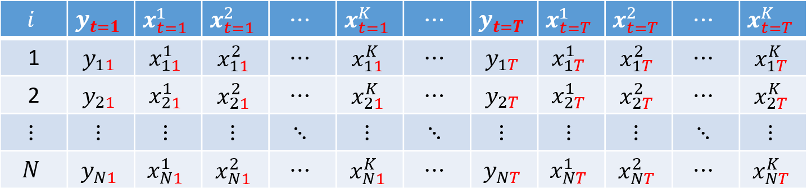
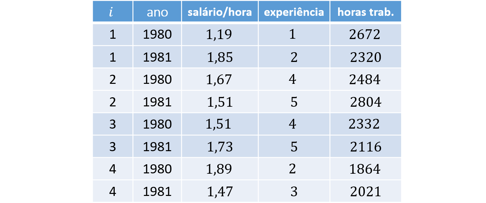
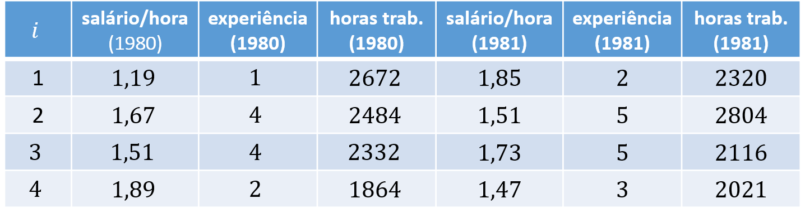

Gravações REC2312
-
Monitoria 4: Dados em Painel e Matriz de Covariâncias dos Erros | Script

-
Monitoria 5: Estimação da Matriz de Covariâncias dos Erros e Estimador de MQE | Script

-
Monitoria 6: Estimador de MQGF | Script

-
Monitoria 7: Matrizes de Transformação e Estimador Between | Script

-
Monitoria 8: Estimadores Within e de Primeiras Diferenças | Script

Estrutura dos Dados
- Seção 2.1.1 de “Panel Data Econometrics with R” (Croissant & Millo, 2018)
- A maioria das notações foram adaptadas de acordo com as notas de aula de Econometria I.
Corte Transversal
Até agora, utilizamos bases de dados em corte transversal (ou cross-section, em inglês), ou seja, em que cada linha representava um indivíduo $i = 1, ..., N$ e observamos as realizações da variável dependente $y$ e das variáveis explicativas $k = 1, 2, ..., K$:
Exemplo
Considerando $N = 4$ indivíduos e $K = 2$ covariadas, segue o exemplo:

Painel
Também é comum utilizarmos dados em painel, isto é, uma base de dados em que observamos os indivíduos $i = 1, ..., N$ nos $t = 1, ..., T$ períodos.
Este tipo de estrutura de dado permite, além de fazer comparações inter-indivíduos (between), avaliar diferenças intra-indivíduos (within) a partir das variações ocorridas ao longo do tempo para um mesmo indivíduo.
Por simplicidade, consideramos que todos indivíduos possuem $T$ observações ao longo do tempo (painel balanceado). Além disso, dados em painel podem estar dispostos de duas formas: longa ou curta.
Painel longo (long, em inglês)
Aqui, cada indivíduo aparece em $T$ linhas. Cada observação é indicada pela dupla $i$ e $t$ (variáveis-chave da base de dados). Essa é a forma padrão utilizada em Econometria.

Painel curto (wide, em inglês)
Na forma curta, as informações das variáveis dependentes e independentes aparecem repetidamente por $T$ vezes, sendo que cada repetição corresponde a um dos $T$ períodos:
Exemplos
Como exemplo, consideramos $N = 4$ indivíduos e $K = 2$ covariadas e $T = 2$ períodos. As bases de dados em paineis longo e curto, respectivamente, teriam as seguintes estruturas:
 Modelo em Painel
Para a observação do indivíduo $i \in \{1, ..., N\}$ no período $t \in \{1, ..., T\}$, podemos escrever o modelo como:
$$ y_{it} = \boldsymbol{x}'_{it} \boldsymbol{\beta} + \varepsilon_{it} \tag{1} $$ em que $\boldsymbol{\beta}$ é um vetor-coluna de $K$ parâmetros
$$ \boldsymbol{\beta} = \left[ \begin{array}{c} \beta_0 \\ \beta_1 \\ \beta_2 \\ \vdots \\ \beta_K \end{array} \right], $$$y_{it}$ é a variável dependente, $\boldsymbol{x}'_{it}$ é o vetor-linha de dimensão $K+1$:
$$ \boldsymbol{x}'_{it} = \left[ \begin{array}{c} 1 & x^1_{it} & x^2_{it} & \cdots & x^K_{it} \end{array} \right], $$e o erro $\varepsilon_{it}$ pode ser escrito como:
$$ \varepsilon_{it} = u_i + v_{it}, $$ sendo $u_i$ o erro individual para o indivíduo $i$ e $v_{it}$ é o erro idiossincrático (residual).
Empilhando as equações (1) para todo indivíduo $i = 1, 2, ..., N$ e todo período $t = 1, 2, ..., T $, temos
$$ \underbrace{\boldsymbol{y}}_{NT \times 1} = \left[ \begin{array}{c} y_{11} \\ y_{12} \\ \vdots \\ y_{1T} \\\hline y_{21} \\ y_{22} \\ \vdots \\ y_{2T} \\\hline \vdots \\\hline y_{N1} \\ y_{N2} \\ \vdots \\ y_{NT} \end{array} \right] \quad \text{ e } \quad \underbrace{\boldsymbol{X}}_{NT \times K} = \left[ \begin{array}{c} \boldsymbol{x}'_{11} \\ \boldsymbol{x}'_{12} \\ \vdots \\ \boldsymbol{x}'_{1T} \\\hline \boldsymbol{x}'_{21} \\ \boldsymbol{x}'_{22} \\ \vdots \\ \boldsymbol{x}'_{2T} \\\hline \vdots \\\hline \boldsymbol{x}'_{N1} \\ \boldsymbol{x}'_{N2} \\ \vdots \\ \boldsymbol{x}'_{NT} \end{array} \right] = \left[ \begin{array}{ccccc} 1 & x^1_{11} & x^2_{11} & \cdots & x^K_{11} \\ 1 & x^1_{12} & x^2_{12} & \cdots & x^K_{12} \\ \vdots & \vdots & \vdots & \ddots & \vdots \\ 1 & x^1_{1T} & x^2_{1T} & \cdots & x^K_{1T} \\\hline 1 & x^1_{21} & x^2_{21} & \cdots & x^K_{21} \\ 1 & x^1_{22} & x^2_{22} & \cdots & x^K_{22} \\ \vdots & \vdots & \vdots & \ddots & \vdots \\ 1 & x^1_{2T} & x^2_{2T} & \cdots & x^K_{2T} \\\hline \vdots & \vdots & \vdots & \ddots & \vdots \\\hline 1 & x^1_{N1} & x^2_{N1} & \cdots & x^K_{N1} \\ 1 & x^1_{N2} & x^2_{N2} & \cdots & x^K_{N2} \\ \vdots & \vdots & \vdots & \ddots & \vdots \\ 1 & x^1_{NT} & x^2_{NT} & \cdots & x^K_{NT} \end{array} \right] $$ As linhas horizontais foram inseridas apenas para facilitar a visualização dos valores referentes a cada indivíduo $i$.
Matriz de Variâncias-Covariâncias dos Erros
- Seção 2.2 de “Panel Data Econometrics with R” (Croissant & Millo, 2018)
A Matriz de Variâncias-Covariâncias dos Erros relaciona um termo de erro, $\varepsilon_{it}$, com todos os demais termos de erro $\varepsilon_{js}$, para todo $j = 1, ..., N$ e todo $a = 1, ..., T$.
Na matriz de covariância de erro, cada linha representa um $\varepsilon_{it}$ e cada coluna representa um $\varepsilon_{jt}$. Seus elementos representam a covariância entre $\varepsilon_{it}$ e $\varepsilon_{jt}$, sendo que pode haver $\varepsilon_{it} = \varepsilon_{jt}$ (que, neste caso, torna-se variância):
$$ cov(\boldsymbol{\varepsilon}) = \underset{NT \times NT}{\boldsymbol{\Sigma}} =$$ $$ \left[ \tiny \begin{array}{cccc|ccc|c|ccc} var(\varepsilon_{{\color{red}1}1}) & cov(\varepsilon_{{\color{red}1}1}, \varepsilon_{{\color{red}1}2}) & \cdots & cov(\varepsilon_{{\color{red}1}1}, \varepsilon_{{\color{red}1}T}) & cov(\varepsilon_{{\color{red}1}1}, \varepsilon_{{\color{red}2}1}) & \cdots & cov(\varepsilon_{{\color{red}1}1}, \varepsilon_{{\color{red}2}T}) & \cdots & cov(\varepsilon_{{\color{red}1}1}, \varepsilon_{{\color{red}N}1}) & \cdots & cov(\varepsilon_{{\color{red}1}1}, \varepsilon_{{\color{red}N}T}) \\ cov(\varepsilon_{{\color{red}1}2}, \varepsilon_{{\color{red}1}1}) & var(\varepsilon_{{\color{red}1}2}) & \cdots & cov(\varepsilon_{{\color{red}1}2}, \varepsilon_{{\color{red}1}T}) & cov(\varepsilon_{{\color{red}1}2}, \varepsilon_{{\color{red}2}1}) & \cdots & cov(\varepsilon_{{\color{red}1}2}, \varepsilon_{{\color{red}2}T}) & \cdots & cov(\varepsilon_{{\color{red}1}2}, \varepsilon_{{\color{red}N}1}) & \cdots & cov(\varepsilon_{{\color{red}1}2}, \varepsilon_{{\color{red}N}T}) \\ \vdots & \vdots & \ddots & \vdots & \vdots & \ddots & \vdots & \ddots & \vdots & \ddots & \vdots \\ cov(\varepsilon_{{\color{red}1}T}, \varepsilon_{{\color{red}1}1}) & cov(\varepsilon_{{\color{red}1}T}, \varepsilon_{{\color{red}1}2}) & \cdots & var(\varepsilon_{{\color{red}1}T}) & cov(\varepsilon_{{\color{red}1}T}, \varepsilon_{{\color{red}2}1}) & \cdots & cov(\varepsilon_{{\color{red}1}T}, \varepsilon_{{\color{red}2}T}) & \cdots & cov(\varepsilon_{{\color{red}1}T}, \varepsilon_{{\color{red}N}1}) & \cdots & cov(\varepsilon_{{\color{red}1}T}, \varepsilon_{{\color{red}N}T}) \\ \hline cov(\varepsilon_{{\color{red}2}1}, \varepsilon_{{\color{red}1}1}) & cov(\varepsilon_{{\color{red}2}1}, \varepsilon_{{\color{red}1}2}) & \cdots & cov(\varepsilon_{{\color{red}2}1}, \varepsilon_{{\color{red}1}T}) & var(\varepsilon_{{\color{red}2}1}) & \cdots & cov(\varepsilon_{{\color{red}2}1}, \varepsilon_{{\color{red}2}T}) & \cdots & cov(\varepsilon_{{\color{red}2}1}, \varepsilon_{{\color{red}N}1}) & \cdots & cov(\varepsilon_{{\color{red}2}1}, \varepsilon_{{\color{red}N}T}) \\ \vdots & \vdots & \ddots & \vdots & \vdots & \ddots & \vdots & \ddots & \vdots & \ddots & \vdots \\ cov(\varepsilon_{{\color{red}2}T}, \varepsilon_{{\color{red}1}1}) & cov(\varepsilon_{{\color{red}2}T}, \varepsilon_{{\color{red}1}2}) & \cdots & cov(\varepsilon_{{\color{red}2}T}, \varepsilon_{{\color{red}1}T}) & cov(\varepsilon_{{\color{red}2}T}, \varepsilon_{{\color{red}2}1}) & \cdots & var(\varepsilon_{{\color{red}2}T}) & \cdots & cov(\varepsilon_{{\color{red}2}T}, \varepsilon_{{\color{red}N}1}) & \cdots & cov(\varepsilon_{{\color{red}2}T}, \varepsilon_{{\color{red}N}T}) \\ \hline \vdots & \vdots & \ddots & \vdots & \vdots & \ddots & \vdots & \ddots & \vdots & \ddots & \vdots \\ \hline cov(\varepsilon_{{\color{red}N}1}, \varepsilon_{{\color{red}1}1}) & cov(\varepsilon_{{\color{red}N}1}, \varepsilon_{{\color{red}1}2}) & \cdots & cov(\varepsilon_{{\color{red}N}1}, \varepsilon_{{\color{red}1}T}) & cov(\varepsilon_{{\color{red}N}1}, \varepsilon_{{\color{red}2}1}) & \cdots & cov(\varepsilon_{{\color{red}N}1}, \varepsilon_{{\color{red}2}T}) & \cdots & var(\varepsilon_{{\color{red}N}1}) & \cdots & cov(\varepsilon_{{\color{red}N}1}, \varepsilon_{{\color{red}N}T}) \\ \vdots & \vdots & \ddots & \vdots & \vdots & \ddots & \vdots & \ddots & \vdots & \ddots & \vdots \\ cov(\varepsilon_{{\color{red}N}T}, \varepsilon_{{\color{red}1}1}) & cov(\varepsilon_{{\color{red}N}T}, \varepsilon_{{\color{red}1}2}) & \cdots & cov(\varepsilon_{{\color{red}N}T}, \varepsilon_{{\color{red}1}T}) & cov(\varepsilon_{{\color{red}N}T}, \varepsilon_{{\color{red}2}1}) & \cdots & cov(\varepsilon_{{\color{red}N}T}, \varepsilon_{{\color{red}2}T}) & \cdots & cov(\varepsilon_{{\color{red}N}T}, \varepsilon_{{\color{red}N}1}) & \cdots & var(\varepsilon_{{\color{red}N}T}) \end{array} \right]$$
Note que a Matriz de Variâncias-Covariâncias dos Erros possui matrizes menores que relacionam os erros do indivíduo $i$ (linha) e do indivíduo $j$ (coluna). Para escrever mais facilmente $\boldsymbol{\Sigma}$, podemos preenchê-la com matrizes menores de $\boldsymbol{\Sigma}_{ij}$:
$$ \underset{NT \times NT}{\boldsymbol{\Sigma}} = \left[ \begin{matrix} \boldsymbol{\Sigma}_1 & \boldsymbol{\Sigma}_{12} & \cdots & \boldsymbol{\Sigma}_{1N} \\ \boldsymbol{\Sigma}_{21} & \boldsymbol{\Sigma}_{2} & \cdots & \boldsymbol{\Sigma}_{2N} \\ \vdots & \vdots & \ddots & \vdots \\ \boldsymbol{\Sigma}_{N1} & \boldsymbol{\Sigma}_{N2} & \cdots & \boldsymbol{\Sigma}_{N} \end{matrix} \right] \tag{1} $$em que, quando $i = j$, temos
$$ \underset{T \times T}{\boldsymbol{\Sigma}_i} = \left[ \begin{matrix} var(\varepsilon_{i1}) & cov(\varepsilon_{i1}, \varepsilon_{i2}) & \cdots & cov(\varepsilon_{i1}, \varepsilon_{iT}) \\ cov(\varepsilon_{i1}, \varepsilon_{i2}) & var(\varepsilon_{i2}) & \cdots & cov(\varepsilon_{i2}, \varepsilon_{iT}) \\ \vdots & \vdots & \ddots & \vdots \\ cov(\varepsilon_{i1}, \varepsilon_{iT}) & cov(\varepsilon_{i2}, \varepsilon_{iT}) & \cdots & var(\varepsilon_{iT}) \end{matrix} \right] \tag{2} $$e, quando $i \neq j$, temos $$ \underset{T \times T}{\boldsymbol{\Sigma}_{ij}} = \left[ \begin{matrix} cov(\varepsilon_{i1}, \varepsilon_{j1}) & cov(\varepsilon_{i1}, \varepsilon_{j2}) & \cdots & cov(\varepsilon_{i1}, \varepsilon_{jT}) \\ cov(\varepsilon_{i1}, \varepsilon_{j2}) & cov(\varepsilon_{i2}, \varepsilon_{j2}) & \cdots & cov(\varepsilon_{i2}, \varepsilon_{jT}) \\ \vdots & \vdots & \ddots & \vdots \\ cov(\varepsilon_{i1}, \varepsilon_{jT}) & cov(\varepsilon_{i2}, \varepsilon_{jT}) & \cdots & cov(\varepsilon_{iT}, \varepsilon_{jT}) \end{matrix} \right]. \tag{3} $$
Como assumimos amostragem aleatória em que a covariância entre dois indivíduos distintos
($i \neq j$) é
$$ cov(\varepsilon_{it}, \varepsilon_{jt}) = cov(\varepsilon_{it}, \varepsilon_{js}) = 0, \qquad \text{para todo } i \neq j.$$
Logo, $\boldsymbol{\Sigma}_{ij} = \boldsymbol{0}$ (matriz de zeros): $$ \underset{T \times T}{\boldsymbol{\Sigma}_{ij}} = \underset{T \times T}{\boldsymbol{0}} = \left[ \begin{matrix} 0 & 0 & \cdots & 0 \\ 0 & 0 & \cdots & 0 \\ \vdots & \vdots & \ddots & \vdots \\ 0 & 0 & \cdots & 0 \end{matrix} \right] $$
Logo, podemos reescrever (1) como
$$ \underset{NT \times NT}{\boldsymbol{\Sigma}} = \left[ \begin{matrix} \boldsymbol{\Sigma}_1 & \boldsymbol{0} & \cdots & \boldsymbol{0} \\ \boldsymbol{0} & \boldsymbol{\Sigma}_2 & \cdots & \boldsymbol{0} \\ \vdots & \vdots & \ddots & \vdots \\ \boldsymbol{0} & \boldsymbol{0} & \cdots & \boldsymbol{\Sigma}_N \end{matrix} \right]. \tag{1'} $$Assumimos também que a Matriz de Variâncias-Covariâncias dos Erros do indivíduo $i$ depende apenas dos parâmetros $\sigma^2_u$ e $\sigma^2_v$, já que:
- Variância de um erro: $ var(\varepsilon_{it}) = \sigma^2_u + \sigma^2_v $
- Covariância de dois erros de um mesmo indivíduo $i$ em dois períodos $t \neq s$: $ cov(\varepsilon_{it}, \varepsilon_{is}) = \sigma^2_u $
Substituindo em (2), segue que
$$ \underset{T \times T}{\boldsymbol{\Sigma}_i} = \left[ \begin{array}{cccc} \sigma^2_u + \sigma^2_v & \sigma^2_u & \cdots & \sigma^2_u \\ \sigma^2_u & \sigma^2_u + \sigma^2_v & \cdots & \sigma^2_u \\ \vdots & \vdots & \ddots & \vdots \\ \sigma^2_u & \sigma^2_u & \cdots & \sigma^2_u + \sigma^2_v \end{array} \right] \tag{2'} $$Exemplo
Por simplicidade, considere que $N = 2$ e $T = 3$. Logo, a Matriz de Variâncias-Covariâncias dos Erros pode ser escrita como;
\begin{align} \underset{6 \times 6}{\boldsymbol{\Sigma}} &= \left[ \begin{array}{cc} \boldsymbol{\Sigma}_1 & \boldsymbol{0} \\ \boldsymbol{0} & \boldsymbol{\Sigma}_2 \end{array} \right] \\ &= \left[ \begin{array} {ccc|ccc} \sigma^2_u + \sigma^2_v & \sigma^2_u & \sigma^2_u & 0 & 0 & 0 \\ \sigma^2_u & \sigma^2_u + \sigma^2_v & \sigma^2_u & 0 & 0 & 0 \\ \sigma^2_u & \sigma^2_u & \sigma^2_u + \sigma^2_v & 0 & 0 & 0\\ \hline 0 & 0 & 0 & \sigma^2_u + \sigma^2_v & \sigma^2_u & \sigma^2_u \\ 0 & 0 & 0 & \sigma^2_u & \sigma^2_u + \sigma^2_v & \sigma^2_u \\ 0 & 0 & 0 & \sigma^2_u & \sigma^2_u & \sigma^2_u + \sigma^2_v \\ \end{array} \right] \end{align}Note que acima foram utilizadas linhas verticais e horizontais apenas para facilitar a visualização dos elementos que substituíram cada matriz.
Calculando no R
Primeiro, denote $I_p$ a matriz identidade de dimensão $p \times p$:
$$ \boldsymbol{I}_p= \left[ \begin{array}{cccc} 1 & 0 & 0 & \cdots & 0 \\ 0 & 1 & 0 & \cdots & 0 \\ 0 & 0 & 1 & \cdots & 0 \\ \vdots & \vdots & \vdots & \ddots & \vdots \\ 0 & 0 & 0 & \cdots & 1 \end{array} \right]_{p \times p}, $$e considere $\boldsymbol{\iota}_q$ um vetor-coluna de 1’s de tamanho $q$: $$ \boldsymbol{\iota}_q = \left[ \begin{array}{c} 1 \\ 1 \\ \vdots \\ 1 \end{array} \right]_{q \times 1} $$
Com dados em corte transversal, era fácil calcular a Matriz de Variâncias-Covariâncias dos Erros, pois só havia um termo de erro e, portanto, tínhamos $\sigma^2$ apenas na diagonal principal:
\begin{align} \boldsymbol{\Sigma}_{\scriptscriptstyle{MQO}} &= \sigma^2 \boldsymbol{I}_N \\ &= \sigma^2 \left[ \begin{array}{cccc} 1 & 0 & \cdots & 0 \\ 0 & 1 & \cdots & 0 \\ \vdots & \vdots & \ddots & \vdots \\ 0 & 0 & \cdots & 1 \end{array} \right] \\ &= \left[ \begin{array}{cccc} \sigma^2 & 0 & \cdots & 0 \\ 0 & \sigma^2 & \cdots & 0 \\ \vdots & \vdots & \ddots & \vdots \\ 0 & 0 & \cdots & \sigma^2 \end{array} \right]_{N \times N} \end{align}Agora, para dados em painel, como visto acima, possuímos duas variâncias de termos de erro, sendo que $\sigma^2_v$ aparece na diagonal principal, cujos elementos (e seus “vizinhos”) precisam ser somados por $\sigma^2_u$. Logo, a Matriz de Variâncias-Covariâncias dos Erros com dados em painel pode ser escrita na forma matricial como:
$$ \boldsymbol{\Sigma} = \sigma^2_v \boldsymbol{I}_{NT} + T \sigma^2_u [\boldsymbol{I}_N \otimes \boldsymbol{\iota}_T (\boldsymbol{\iota}'_T \boldsymbol{\iota}_T)^{-1} \boldsymbol{\iota}'_T] \tag{4} $$Note que o primeiro termo da soma cria uma diagonal principal de $\sigma^2_v$.
\begin{align} \sigma^2_v \boldsymbol{I}_{NT} &= \sigma^2_v \left[ \begin{array}{cccc} 1 & 0 & \cdots & 0 \\ 0 & 1 & \cdots & 0 \\ \vdots & \vdots & \ddots & \vdots \\ 0 & 0 & \cdots & 1 \end{array} \right] \\ &= \left[ \begin{array}{cccc} \sigma^2_v & 0 & \cdots & 0 \\ 0 & \sigma^2_v & \cdots & 0 \\ \vdots & \vdots & \ddots & \vdots \\ 0 & 0 & \cdots & \sigma^2_v \end{array} \right]_{NT \times NT} \end{align}Agora, “só” precisamos somar $\sigma^2_u$ “na proximidade” dessa diagonal.
Por enquanto, vamos ignorar $T \sigma^2_u$ e vamos chamar a parte entre colchetes de matriz de transformação inter-indivíduos (between):
$$ \boldsymbol{B}\ \equiv\ \boldsymbol{I}_N \otimes \Big[ \boldsymbol{\iota}_T (\boldsymbol{\iota}'_T \boldsymbol{\iota}_T)^{-1} \boldsymbol{\iota}'_T \Big] $$Note que a matriz $\boldsymbol{B}$ é chamada de $\boldsymbol{N}$ nas notas de aula de Econometria II (2021) do prof. Daniel.
\begin{align} \boldsymbol{B} &\equiv \boldsymbol{I}_{N} \otimes \boldsymbol{\iota}_T (\boldsymbol{\iota}'_T \boldsymbol{\iota}_T)^{-1} \boldsymbol{\iota}'_T \\ &= \left[ \begin{array}{cc} 1 & \cdots & 0 \\ \vdots & \ddots & \vdots \\ 0 & \cdots & 1 \end{array} \right] \otimes \left( \left[ \begin{array}{c} 1 \\ \vdots \\ 1 \end{array} \right] \left( \left[ \begin{array}{ccc} 1 & \cdots & 1 \end{array} \right] \left[ \begin{array}{c} 1 \\ \vdots \\ 1 \end{array} \right] \right)^{-1} \left[ \begin{array}{ccc} 1 & \cdots & 1 \end{array} \right] \right) \\ &= \left[ \begin{array}{cc} 1 & \cdots & 0 \\ \vdots & \ddots & \vdots \\ 0 & \cdots & 1 \end{array} \right] \otimes \left( \left[ \begin{array}{c} 1 \\ \vdots \\ 1 \end{array} \right] \left( T \right)^{-1} \left[ \begin{array}{ccc} 1 & \cdots & 1 \end{array} \right] \right) \\ &= \left[ \begin{array}{cc} 1 & \cdots & 0 \\ \vdots & \ddots & \vdots \\ 0 & \cdots & 1 \end{array} \right] \otimes \left( \left[ \begin{array}{c} 1 \\ \vdots \\ 1 \end{array} \right] \frac{1}{T} \left[ \begin{array}{ccc} 1 & \cdots & 1 \end{array} \right] \right) \\ &= \left[ \begin{array}{cc} 1 & \cdots & 0 \\ \vdots & \ddots & \vdots \\ 0 & \cdots & 1 \end{array} \right] \otimes \left( \frac{1}{T} \left[ \begin{array}{c} 1 & \cdots & 1 \\ \vdots & \ddots & \vdots \\ 1 & \cdots & 1 \end{array} \right] \right) \\ &= \left[ \begin{array}{cc} 1 & \cdots & 0 \\ \vdots & \ddots & \vdots \\ 0 & \cdots & 1 \end{array} \right]_{N \times N} \otimes \left( \begin{array}{ccc} 1/T & \cdots & 1/T \\ \vdots & \ddots & \vdots\\ 1/T & \cdots & 1/T \end{array} \right)_{T \times T} \\ &= \left[ \begin{array}{ccc} 1 \left( \begin{array}{ccc} 1/T & \cdots & 1/T \\ \vdots & \ddots & \vdots\\ 1/T & \cdots & 1/T \end{array} \right) & \cdots & 0 \left( \begin{array}{ccc} 1/T & \cdots & 1/T \\ \vdots & \ddots & \vdots\\ 1/T & \cdots & 1/T \end{array} \right) \\ \vdots & \ddots & \vdots \\ 0 \left( \begin{array}{ccc} 1/T & \cdots & 1/T \\ \vdots & \ddots & \vdots\\ 1/T & \cdots & 1/T \end{array} \right) & \cdots & 1 \left( \begin{array}{ccc} 1/T & \cdots & 1/T \\ \vdots & \ddots & \vdots\\ 1/T & \cdots & 1/T \end{array} \right) \end{array} \right] \\ &= \left[ \begin{array}{rrr|r|rrr} 1/T & \cdots & 1/T & \cdots & 0 & \cdots & 0 \\ \vdots & \ddots & \vdots & \cdots & \vdots & \ddots & \vdots \\ 1/T & \cdots & 1/T & \cdots & 0 & \cdots & 0 \\\hline \vdots & \vdots & \vdots & \ddots & \vdots & \vdots & \vdots \\\hline 0 & \cdots & 0 & \cdots & 1/T & \cdots & 1/T \\ \vdots & \ddots & \vdots & \cdots & \vdots & \ddots & \vdots \\ 0 & \cdots & 0 & \cdots & 1/T & \cdots & 1/T \end{array} \right]_{NT \times NT}, \end{align}em que $\otimes$ é o produto de Kronecker. Agora, ao multiplicar por $T \sigma^2_u$, todos elementos $1/T$ tornam-se $\sigma^2_u$:
$$ T \sigma^2_u \boldsymbol{B} = \left[ \begin{array}{rrr|r|rrr} \sigma^2_u & \cdots & \sigma^2_u & \cdots & 0 & \cdots & 0 \\ \vdots & \ddots & \vdots & \cdots & \vdots & \ddots & \vdots \\ \sigma^2_u & \cdots & \sigma^2_u & \cdots & 0 & \cdots & 0 \\\hline \vdots & \vdots & \vdots & \ddots & \vdots & \vdots & \vdots \\\hline 0 & \cdots & 0 & \cdots & \sigma^2_u & \cdots & \sigma^2_u \\ \vdots & \ddots & \vdots & \cdots & \vdots & \ddots & \vdots \\ 0 & \cdots & 0 & \cdots & \sigma^2_u & \cdots & \sigma^2_u \end{array} \right]_{NT \times NT}, `$$Somando os dois termos de (4), conseguimos obter a Matriz de Variâncias-Covariâncias dos Erros:
\begin{align} \boldsymbol{\Sigma} &= \sigma^2_v \boldsymbol{I}_{NT} + T \sigma^2_u \boldsymbol{B} \\ &= \left[ \begin{array}{cccc} \sigma^2_v & 0 & \cdots & 0 \\ 0 & \sigma^2_v & \cdots & 0 \\ \vdots & \vdots & \ddots & \vdots \\ 0 & 0 & \cdots & \sigma^2_v \end{array} \right] + \left[ \begin{array}{ccc|c|ccc} \sigma^2_u & \cdots & \sigma^2_u & \cdots & 0 & \cdots & 0 \\ \vdots & \ddots & \vdots & \cdots & \vdots & \ddots & \vdots \\ \sigma^2_u & \cdots & \sigma^2_u & \cdots & 0 & \cdots & 0 \\\hline \vdots & \vdots & \vdots & \ddots & \vdots & \vdots & \vdots \\\hline 0 & \cdots & 0 & \cdots & \sigma^2_u & \cdots & \sigma^2_u \\ \vdots & \ddots & \vdots & \cdots & \vdots & \ddots & \vdots \\ 0 & \cdots & 0 & \cdots & \sigma^2_u & \cdots & \sigma^2_u \end{array} \right] \\ &= \left[ \begin{array}{ccc|c|ccc} \sigma^2_u + \sigma^2_v & \cdots & \sigma^2_u & \cdots & 0 & \cdots & 0 \\ \vdots & \ddots & \vdots & \cdots & \vdots & \ddots & \vdots \\ \sigma^2_u & \cdots & \sigma^2_u + \sigma^2_v & \cdots & 0 & \cdots & 0 \\\hline \vdots & \vdots & \vdots & \ddots & \vdots & \vdots & \vdots \\\hline 0 & \cdots & 0 & \cdots & \sigma^2_u + \sigma^2_v & \cdots & \sigma^2_u \\ \vdots & \ddots & \vdots & \cdots & \vdots & \ddots & \vdots \\ 0 & \cdots & 0 & \cdots & \sigma^2_u & \cdots & \sigma^2_u + \sigma^2_v \end{array} \right] \end{align}Exemplo
Considere o caso com $N = 2$ e $T = 3$. Vamos, então, obter a seguinte Matriz de Variâncias-Covariâncias dos Erros:
$$\boldsymbol{\Sigma} = \left[ \begin{array}{ccc|ccc} \sigma^2_u + \sigma^2_v & \sigma^2_u & \sigma^2_u & 0 & 0 & 0 \\ \sigma^2_u & \sigma^2_u + \sigma^2_v & \sigma^2_u & 0 & 0 & 0 \\ \sigma^2_u & \sigma^2_u & \sigma^2_u + \sigma^2_v & 0 & 0 & 0 \\\hline 0 & 0 & 0 & \sigma^2_u + \sigma^2_v & \sigma^2_u & \sigma^2_u \\ 0 & 0 & 0 & \sigma^2_u & \sigma^2_u + \sigma^2_v & \sigma^2_u \\ 0 & 0 & 0 & \sigma^2_u & \sigma^2_u & \sigma^2_u + \sigma^2_v \end{array} \right]$$Assumindo $\sigma^2_u = 2$ e $\sigma^2_v = 3$, segue que
$$\boldsymbol{\Sigma} = \left[ \begin{array}{ccc|ccc} 5 & 2 & 2 & 0 & 0 & 0 \\ 2 & 5 & 2 & 0 & 0 & 0 \\ 2 & 2 & 5 & 0 & 0 & 0 \\\hline 0 & 0 & 0 & 5 & 2 & 2 \\ 0 & 0 & 0 & 2 & 5 & 2 \\ 0 & 0 & 0 & 2 & 2 & 5 \end{array} \right]$$Para calcular no R, vamos definir:
N = 2 # número de indivíduos
T = 3 # números de períodos
sig2u = 2 # variância do termo de erro do indivíduo
sig2v = 3 # variância do termo de erro idiossincrático
O primeiro termo de $\boldsymbol{\Sigma}$ é
I_NT = diag(N*T) # matriz identidade de tamanho NT
I_NT
## [,1] [,2] [,3] [,4] [,5] [,6]
## [1,] 1 0 0 0 0 0
## [2,] 0 1 0 0 0 0
## [3,] 0 0 1 0 0 0
## [4,] 0 0 0 1 0 0
## [5,] 0 0 0 0 1 0
## [6,] 0 0 0 0 0 1
termo1 = sig2v * I_NT
termo1
## [,1] [,2] [,3] [,4] [,5] [,6]
## [1,] 3 0 0 0 0 0
## [2,] 0 3 0 0 0 0
## [3,] 0 0 3 0 0 0
## [4,] 0 0 0 3 0 0
## [5,] 0 0 0 0 3 0
## [6,] 0 0 0 0 0 3
Para o 2º termo de $\boldsymbol{\Sigma}$, temos que criar a matriz identidade e o vetor de 1’s primeiro:
iota_T = matrix(1, T, 1) # vetor coluna de 1's de tamanho T
iota_T
## [,1]
## [1,] 1
## [2,] 1
## [3,] 1
I_N = diag(N) # matriz identidade de tamanho N
I_N
## [,1] [,2]
## [1,] 1 0
## [2,] 0 1
Vamos obter $\boldsymbol{\iota}_T (\boldsymbol{\iota}'_T \boldsymbol{\iota}_T)^{-1} \boldsymbol{\iota}'_T$
# Para obter matriz T x T preenchida por 1/T, sendo T = 3, temos que:
t(iota_T) %*% iota_T # produto interno de iotas = quantidade T
## [,1]
## [1,] 3
solve(t(iota_T) %*% iota_T) # tomar a inversa = 1/T
## [,1]
## [1,] 0.3333333
iota_T %*% solve(t(iota_T) %*% iota_T) %*% t(iota_T) # pré e pós-multiplicar por iotas
## [,1] [,2] [,3]
## [1,] 0.3333333 0.3333333 0.3333333
## [2,] 0.3333333 0.3333333 0.3333333
## [3,] 0.3333333 0.3333333 0.3333333
Agora, vamos calcular
$\boldsymbol{B}\ =\ I_N \otimes \boldsymbol{\iota}_T (\boldsymbol{\iota}'_T \boldsymbol{\iota}_T)^{-1} \boldsymbol{\iota}'_T$ usando o operador de produto de Kronecker %x%:
B = I_N %x% (iota_T %*% solve(t(iota_T) %*% iota_T) %*% t(iota_T))
round(B, 3)
## [,1] [,2] [,3] [,4] [,5] [,6]
## [1,] 0.333 0.333 0.333 0.000 0.000 0.000
## [2,] 0.333 0.333 0.333 0.000 0.000 0.000
## [3,] 0.333 0.333 0.333 0.000 0.000 0.000
## [4,] 0.000 0.000 0.000 0.333 0.333 0.333
## [5,] 0.000 0.000 0.000 0.333 0.333 0.333
## [6,] 0.000 0.000 0.000 0.333 0.333 0.333
Multiplicando $\boldsymbol{B}$ por $T \sigma^2_u$, obtemos o 2º termo de $\boldsymbol{\Sigma}$:
termo2 = T * sig2u * B
termo2
## [,1] [,2] [,3] [,4] [,5] [,6]
## [1,] 2 2 2 0 0 0
## [2,] 2 2 2 0 0 0
## [3,] 2 2 2 0 0 0
## [4,] 0 0 0 2 2 2
## [5,] 0 0 0 2 2 2
## [6,] 0 0 0 2 2 2
Então, a Matriz de Variâncias-Covariâncias dos Erros é dada por:
Sigma = termo1 + termo2
Sigma
## [,1] [,2] [,3] [,4] [,5] [,6]
## [1,] 5 2 2 0 0 0
## [2,] 2 5 2 0 0 0
## [3,] 2 2 5 0 0 0
## [4,] 0 0 0 5 2 2
## [5,] 0 0 0 2 5 2
## [6,] 0 0 0 2 2 5
Estimação dos Componentes de Erro
-
Note que não temos $\sigma^2_v$ e $\sigma^2_u$ e, logo, $\boldsymbol{\Sigma}$ é desconhecido.
-
Primeiro, considere a matriz de transformação within, dada por
- Note que podemos reescrever \begin{align} \hat{\boldsymbol{\Sigma}} &= \hat{\sigma}^2_v \boldsymbol{I}_{NT} + T \hat{\sigma}^2_u \boldsymbol{B}\\ &= \hat{\sigma}^2_v (\boldsymbol{W} + \boldsymbol{B}) + T \hat{\sigma}^2_u \boldsymbol{B}\\ &= \hat{\sigma}^2_v \boldsymbol{W} + \hat{\sigma}^2_v \boldsymbol{B} + T \hat{\sigma}^2_u \boldsymbol{B}\\ &= \hat{\sigma}^2_v \boldsymbol{W} + (\hat{\sigma}^2_v + T \hat{\sigma}^2_u) \boldsymbol{B} \end{align} em que $\boldsymbol{W} = \boldsymbol{I}_{NT} - \boldsymbol{B} \iff \boldsymbol{I}_{NT} = \boldsymbol{W} + \boldsymbol{B} $
- Isso pode ser generalizado para: $$ \hat{\boldsymbol{\Sigma}}^p = (\hat{\sigma}^2_v)^p \boldsymbol{W} + (\hat{\sigma}^2_v + T \hat{\sigma}^2_u)^p \boldsymbol{B}, \tag{2.29} $$ em que $p$ é um escalar.
- Essa fórmula será importante para calcularmos $ \hat{\boldsymbol{\Sigma}}^{-1}$ ou $ \hat{\boldsymbol{\Sigma}}^{-0,5}$ mais adiante.
- Se $\boldsymbol{\varepsilon}$ fosse conhecido, então poderíamos estimar as duas variâncias usando:
-
Como $\boldsymbol{\varepsilon}$ é desconhecido, então podemos usar resíduos de estimadores consistentes em seu lugar.
-
Wallace e Hussain (1969): usam resíduos MQO
-
Amemiya (1971): usa resíduos within $$\hat{\sigma}^2_v = \frac{\hat{\boldsymbol{\varepsilon}}'_{\scriptscriptstyle{W}} \boldsymbol{W} \hat{\boldsymbol{\varepsilon}}_{\scriptscriptstyle{W}}}{N(T-1)} \quad \text{ e } \quad \hat{\sigma}^2_u = \frac{1}{T} \left( \frac{\hat{\boldsymbol{\varepsilon}}'_{\scriptscriptstyle{W}} \boldsymbol{B} \hat{\boldsymbol{\varepsilon}}_{\scriptscriptstyle{W}}}{N} - \hat{\sigma}^2_v \right)$$
-
Hausman e Taylor (1981): propuseram ajuste ao método de Amemiya (1971), em que $\hat{\boldsymbol{\varepsilon}}_{\scriptscriptstyle{W}}$ são regredidos em todas variáveis invariantes no tempo no modelo e são utilizados os resíduos dessa regressão, $\hat{\boldsymbol{\varepsilon}}_{\scriptscriptstyle{HT}}$.
-
Swamy e Arora (1972): usam resíduos between e within para calcular: $$\hat{\sigma}^2_v = \frac{\hat{\boldsymbol{\varepsilon}}'_{\scriptscriptstyle{W}} \boldsymbol{W} \hat{\boldsymbol{\varepsilon}}_{\scriptscriptstyle{W}}}{N(T-1) - K} \quad \text{ e } \quad \hat{\sigma}^2_u = \frac{1}{T} \left( \frac{\hat{\boldsymbol{\varepsilon}}'_{\scriptscriptstyle{B}} \boldsymbol{B} \hat{\boldsymbol{\varepsilon}}_{\scriptscriptstyle{B}}}{N - K - 1} - \hat{\sigma}^2_v \right)$$
-
Nerlove (1971): computa $\sigma^2_u$ empírica dos efeitos fixos do modelo within
Após obter $\hat{\sigma}^2_u$ e $\hat{\sigma}^2_v$, só precisamos calcular $\hat{\boldsymbol{\Sigma}}$:
Estimador MQE
- Seção 2.1.1 de “Panel Data Econometrics with R” (Croissant & Millo, 2018)
- Mínimos Quadrados Empilhados (MQE) faz a estimação igual ao MQO, porém a inferência considera $\boldsymbol{\Sigma} \neq \sigma^2 \boldsymbol{I}$, considera correlação entre as observações de um mesmo indivíduo $i$.
O modelo a ser estimado é $$ \boldsymbol{y} = \boldsymbol{X\beta} + \boldsymbol{\varepsilon} $$
-
O estimador $\hat{\boldsymbol{\beta}}$ de MQE (igual ao de MQO) é dado por $$ \hat{\boldsymbol{\beta}}_{\scriptscriptstyle{MQE}} = (\boldsymbol{X}'\boldsymbol{X})^{-1} \boldsymbol{X}' \boldsymbol{y} $$
-
Note que a Matriz de Variâncias-Covariâncias do Estimador de MQO, que supõe $ \boldsymbol{\Sigma} = \sigma^2 \boldsymbol{I} $, simplifica para:
- A Matriz de Variâncias-Covariâncias do Estimador de MQE, que considera a correlação entre observações de um mesmo indivíduo, é dada por $$ V(\hat{\boldsymbol{\beta}}_{\scriptscriptstyle{MQE}}) = (\boldsymbol{X}'\boldsymbol{X})^{-1} \boldsymbol{X}' \hat{\boldsymbol{\Sigma}} \boldsymbol{X} (\boldsymbol{X}'\boldsymbol{X})^{-1} $$
Estimação via plm()
Para ilustrar as estimações MQO dos estimadores vistos anteriormente, usaremos a base de dados TobinQ do pacote pder, que conta com dados de 188 firmas por 35 anos (6580 observações).
data("TobinQ", package = "pder")
str(TobinQ)
## 'data.frame': 6580 obs. of 15 variables:
## $ cusip : int 2824 2824 2824 2824 2824 2824 2824 2824 2824 2824 ...
## $ year : num 1951 1952 1953 1954 1955 ...
## $ isic : int 2835 2835 2835 2835 2835 2835 2835 2835 2835 2835 ...
## $ ikb : num 0.2295 0.0403 0.0404 0.0518 0.055 ...
## $ ikn : num 0.2049 0.1997 0.1103 0.1258 0.0682 ...
## $ qb : num 5.61 6.01 4.19 4 4.47 ...
## $ qn : num 10.91 12.23 7.41 6.78 7.37 ...
## $ kstock: num 27.3 30.5 31.7 32.6 32.3 ...
## $ ikicb : num NA 0.193156 0.002919 -0.007656 -0.000145 ...
## $ ikicn : num 0.012 0.02448 0.09763 -0.00635 0.06144 ...
## $ omphi : num 0.1841 0.0968 0.0745 0.0727 0.0558 ...
## $ qicb : num NA 0.245 1.9 0.421 -0.166 ...
## $ qicn : num NA 0.066 4.685 0.947 -0.135 ...
## $ sb : num NA 1.98 1.55 1.65 1.64 ...
## $ sn : num NA 4.02 3.3 3.09 2.94 ...
cusip: Identificador da empresayear: Anoikn: Investimento dividido pelo capitalqn: Q de Tobin (razão entre valor da firma e o custo de reposição de seu capital físico). Se $Q > 1$, então o lucro do investimento é maior do que seu custo.
Queremos estimar o seguinte modelo: $$ \text{ikn} = \beta_0 + \text{qn} \beta_1 + \varepsilon $$
Usaremos a função plm() (do pacote de mesmo nome) para estimar modelos lineares em dados em painel. Seus principais argumentos são:
formula: equação do modelodata: base de dados emdata.frame(precisa preencherindex) oupdata.frame(formato próprio do pacote que já indexa as colunas de indivíduos e de tempo)model: estimador a ser computado ‘pooling’ (MQE), ‘between’, ‘within’ (Efeitos Fixos) ou ‘random’ (Efeitos Aleatórios/MQGF)index: vetor de nomes das colunas dos identificadores de indivíduo e de tempo
Note que a estimação do MQE (pooled) via plm(), faz a estimação considerando
$\boldsymbol{\Sigma} = \sigma^2 \boldsymbol{I}$ e, portanto, estará erroneamente desconsiderando as correlações entre erros de um mesmo indivíduo:
library(plm)
# Transformando no formato pdata frame, com indentificador de indivíduo e de tempo
pTobinQ = pdata.frame(TobinQ, index=c("cusip", "year"))
# Estimação MQO
Q.pooling = plm(ikn ~ qn, pTobinQ, model = "pooling")
Q.ols = lm(ikn ~ qn, TobinQ)
# Comparando ambos outputs
stargazer::stargazer(Q.pooling, Q.ols, type="text", omit.stat="f")
##
## ================================================
## Dependent variable:
## ----------------------------
## ikn
## panel OLS
## linear
## (1) (2)
## ------------------------------------------------
## qn 0.004*** 0.004***
## (0.0002) (0.0002)
##
## Constant 0.158*** 0.158***
## (0.001) (0.001)
##
## ------------------------------------------------
## Observations 6,580 6,580
## R2 0.111 0.111
## Adjusted R2 0.111 0.111
## Residual Std. Error 0.086 (df = 6578)
## ================================================
## Note: *p<0.1; **p<0.05; ***p<0.01
- Precisamos fazer a inferência considerando uma Matriz de Variâncias-Covariâncias dos Erros apropriada. Para isto, vamos usar o argumento
vcov=vcovBKdentro da funçãosummary():
# Estimação MQE - matriz de var-cov dos erros com correlação intra-indiv
summary(Q.pooling, vcov=vcovBK)$coef
## Estimate Std. Error t-value Pr(>|t|)
## (Intercept) 0.15799969 0.0034686968 45.55016 0.000000e+00
## qn 0.00439197 0.0003774606 11.63557 5.458161e-31
Estimação Analítica
A estimação analítica do MQE é equivalente ao MQO vista anteriormente, mas no contexto de dados em painel. As principais diferenças são: o número de graus de liberdade é $NT - K - 1$ (pois possui $NT$ observações) e a modelagem da matriz de variâncias-covariâncias dos erros, $\boldsymbol{\Sigma}$, para o contexto de painel.
a) Criando vetores/matrizes e definindo N, T e K
# Criando o vetor y
y = as.matrix(TobinQ[,"ikn"]) # transformando coluna de data frame em matriz
head(y)
## [,1]
## [1,] 0.20488372
## [2,] 0.19974634
## [3,] 0.11033265
## [4,] 0.12583384
## [5,] 0.06819211
## [6,] 0.09540332
# Criando a matriz de covariadas X com primeira coluna de 1's
X = cbind( 1, TobinQ[, "qn"] ) # juntando 1's com as covariadas
X = as.matrix(X) # transformando em matriz
head(X)
## [,1] [,2]
## [1,] 1 10.910007
## [2,] 1 12.234629
## [3,] 1 7.410110
## [4,] 1 6.779812
## [5,] 1 7.372266
## [6,] 1 6.097779
# Pegando valores N, T e K
N = length( unique(TobinQ$cusip) )
N # nº de indivíduos i
## [1] 188
T = length( unique(TobinQ$year) )
T # nº de períodos t
## [1] 35
K = ncol(X) - 1
K # nº de covariadas
## [1] 1
b) Estimativas de MQE $\hat{\boldsymbol{\beta}}_{\scriptscriptstyle{MQE}}$
$$ \hat{\boldsymbol{\beta}}_{\scriptscriptstyle{MQE}} = (\boldsymbol{X}'\boldsymbol{X})^{-1} \boldsymbol{X}' \boldsymbol{y} $$bhat = solve( t(X) %*% X ) %*% t(X) %*% y
bhat
## [,1]
## [1,] 0.15799969
## [2,] 0.00439197
c) Valores ajustados/preditos $\hat{\boldsymbol{y}}$
$$ \hat{\boldsymbol{y}} = \boldsymbol{X} \hat{\boldsymbol{\beta}} $$yhat = X %*% bhat
head(yhat)
## [,1]
## [1,] 0.2059161
## [2,] 0.2117338
## [3,] 0.1905447
## [4,] 0.1877764
## [5,] 0.1903785
## [6,] 0.1847810
d) Resíduos $\hat{\boldsymbol{\varepsilon}}$
$$ \hat{\boldsymbol{\varepsilon}} = \boldsymbol{y} - \hat{\boldsymbol{y}} $$ehat = y - yhat
head(ehat)
## [,1]
## [1,] -0.001032395
## [2,] -0.011987475
## [3,] -0.080212022
## [4,] -0.061942582
## [5,] -0.122186352
## [6,] -0.089377633
e) Variâncias dos termos de erro
\begin{align} \hat{\sigma}^2_v &= \frac{\hat{\boldsymbol{\varepsilon}}'_{\scriptscriptstyle{MQO}} \boldsymbol{W} \hat{\boldsymbol{\varepsilon}}_{\scriptscriptstyle{MQO}}}{N(T-1)} \\ \hat{\sigma}^2_u &=\frac{1}{T} \left( \frac{\hat{\boldsymbol{\varepsilon}}'_{\scriptscriptstyle{MQO}} \boldsymbol{B} \hat{\boldsymbol{\varepsilon}}_{\scriptscriptstyle{MQO}}}{N} - \hat{\sigma}^2_v \right) \end{align}Como
$\hat{\sigma}^2_u$ e
$\hat{\sigma}^2_v$ são escalares, é conveniente transformar as “matrizes 1x1” em números usando as.numeric():
# Criando matrizes between e within
iota_T = matrix(1, T, 1) # vetor coluna de 1's de tamanho T
I_N = diag(N) # matriz identidade de tamanho N
I_NT = diag(N*T) # matriz identidade de tamanho NT
B = I_N %x% (iota_T %*% solve(t(iota_T) %*% iota_T) %*% t(iota_T))
W = I_NT - B
# Calculando variâncias dos termos de erro (Wallace & Hussain)
sig2v = as.numeric( (t(ehat) %*% W %*% ehat) / (N*(T-1)) )
sig2u = as.numeric( (1/T) * ( (t(ehat) %*% B %*% ehat)/N - sig2v ) )
f) Matriz de Variâncias-Covariâncias dos Erros $$\hat{\boldsymbol{\Sigma}} = \hat{\sigma}^2_v \boldsymbol{W} + (\hat{\sigma}^2_v + T \hat{\sigma}^2_u) \boldsymbol{B}$$
# Calculando a Matriz de Variâncias-Covariâncias dos Erros
Sigma = sig2v * W + (sig2v + T*sig2u) * B
g) Matriz de Variâncias-Covariâncias do Estimador
$$ \widehat{\text{Var}}(\hat{\boldsymbol{\beta}}) = (\boldsymbol{X}'\boldsymbol{X})^{-1} \boldsymbol{X}' \hat{\boldsymbol{\Sigma}} \boldsymbol{X} (\boldsymbol{X}'\boldsymbol{X})^{-1} $$# Calculando a Matriz de variância-covariância dos estimadores
bread = solve( t(X) %*% X )
meat = t(X) %*% Sigma %*% X
Vbhat = bread %*% meat %*% bread # sandwich
Vbhat
## [,1] [,2]
## [1,] 1.220549e-05 -2.839164e-07
## [2,] -2.839164e-07 1.133241e-07
h) Erros-padrão do estimador $\text{se}(\hat{\boldsymbol{\beta}})$
É a raiz quadrada da diagonal principal da Matriz de Variâncias-Covariâncias do Estimador
se_bhat = sqrt( diag(Vbhat) )
se_bhat
## [1] 0.0034936352 0.0003366365
i) Estatística t
$$ t_{\hat{\beta}_k} = \frac{\hat{\beta}_k}{\text{se}(\hat{\beta}_k)} \tag{4.6} $$# Cálculo da estatística t
t_bhat = bhat / se_bhat
t_bhat
## [,1]
## [1,] 45.22501
## [2,] 13.04663
j) P-valor
$$ p_{\hat{\beta}_k} = 2.\Phi_{t_{(NT-K-1)}}(-|t_{\hat{\beta}_k}|), \tag{4.7} $$# p-valor
p_bhat = 2 * pt(-abs(t_bhat), N*T-K-1)
p_bhat
## [,1]
## [1,] 0.000000e+00
## [2,] 1.986019e-38
k) Tabela-resumo
cbind(bhat, se_bhat, t_bhat, p_bhat) # resultado MQE correto
## se_bhat
## [1,] 0.15799969 0.0034936352 45.22501 0.000000e+00
## [2,] 0.00439197 0.0003366365 13.04663 1.986019e-38
summary(Q.pooling)$coef # resultado MQO via plm() ou lm()
## Estimate Std. Error t-value Pr(>|t|)
## (Intercept) 0.15799969 0.001124399 140.51928 0.000000e+00
## qn 0.00439197 0.000152940 28.71694 5.789663e-171
summary(Q.pooling, vcov=vcovBK)$coef # com matriz cov erros ajustada
## Estimate Std. Error t-value Pr(>|t|)
## (Intercept) 0.15799969 0.0034686968 45.55016 0.000000e+00
## qn 0.00439197 0.0003774606 11.63557 5.458161e-31
Estimador MQGF
-
Seção 2.3 de “Panel Data Econometrics with R” (Croissant & Millo, 2018)
-
Também conhecido como estimador de efeitos aleatórios, pois considera que os efeitos individuais são aleatórios: $E(\boldsymbol{u}) = 0$
-
Erros são relacionados pela Matriz de Variâncias-Covariâncias dos Erros $\boldsymbol{\Sigma}$.
-
O estimador de MQGF é dado por $$ {\boldsymbol{\beta}}_{\scriptscriptstyle{MQGF}} = (\boldsymbol{X}' {\boldsymbol{\Sigma}}^{-1} \boldsymbol{X})^{-1} (\boldsymbol{X}' {\boldsymbol{\Sigma}}^{-1} \boldsymbol{y}) \tag{2.27} $$
-
A matriz de variâncias-covariâncias do estimador é dada por $$ V(\hat{\boldsymbol{\beta}}_{\scriptscriptstyle{MQGF}}) = (\boldsymbol{X}' \boldsymbol{\Sigma}^{-1} \boldsymbol{X})^{-1} \tag{2.28} $$
-
A matriz $\boldsymbol{\Sigma}$ depende apenas de dois parâmetros: $\sigma^2_u$ e $\sigma^2_v$, temos: $$ \boldsymbol{\Sigma}^p = ({\sigma}^2_v)^p \boldsymbol{W} + ({\sigma}^2_v + T {\sigma}^2_u)^p \boldsymbol{B} \tag{2.29} $$
- Como desconhecemos $\boldsymbol{\Sigma}$, podemos calcular $\boldsymbol{\hat{\Sigma}}$ por meio da estimação dos componentes de erro usando, por exemplo, Wallace e Hussain (1969):
Estimação via plm()
- Usaremos novamente a função
plm(), mas definiremosmodel = randompara que seja estimado via MQGF - em
random.methodpodemos escolher o método de cálculo dos parâmetros de erro:"walhus"para Wallace e Hussain (1969)"amemiya"para Amemiya (1971)"ht"para Hausman e Taylor (1981)"swar"para Swamy e Arora (1972) [padrão]"nerlove"para Nerlove (1971)
library(plm)
data("TobinQ", package = "pder")
pTobinQ = pdata.frame(TobinQ, index=c("cusip", "year"))
# Estimações MQGF
Q.walhus = plm(ikn ~ qn, pTobinQ, model = "random", random.method = "walhus")
Q.amemiya = plm(ikn ~ qn, pTobinQ, model = "random", random.method = "amemiya")
Q.ht = plm(ikn ~ qn, pTobinQ, model = "random", random.method = "ht")
Q.swar = plm(ikn ~ qn, pTobinQ, model = "random", random.method = "swar")
Q.nerlove = plm(ikn ~ qn, pTobinQ, model = "random", random.method = "nerlove")
# Resumindo 5 estimações em única tabela
stargazer::stargazer(Q.walhus, Q.amemiya, Q.ht, Q.swar, Q.nerlove,
digits=5, type="text", omit.stat="f")
##
## ===================================================================
## Dependent variable:
## ------------------------------------------------------
## ikn
## (1) (2) (3) (4) (5)
## -------------------------------------------------------------------
## qn 0.00386*** 0.00386*** 0.00386*** 0.00386*** 0.00386***
## (0.00017) (0.00017) (0.00017) (0.00017) (0.00017)
##
## Constant 0.15933*** 0.15933*** 0.15933*** 0.15933*** 0.15934***
## (0.00341) (0.00344) (0.00344) (0.00342) (0.00361)
##
## -------------------------------------------------------------------
## Observations 6,580 6,580 6,580 6,580 6,580
## R2 0.07418 0.07412 0.07412 0.07415 0.07376
## Adjusted R2 0.07404 0.07398 0.07398 0.07401 0.07362
## ===================================================================
## Note: *p<0.1; **p<0.05; ***p<0.01
Neste caso específico, os resultados são praticamente idênticos.
Estimação Analítica
- Aqui, faremos a estimação analítica do MQGF usando o método de Wallace e Hussain (1969).
- Primeiro, precisamos encontrar $\hat{\boldsymbol{\beta}}_{\scriptscriptstyle{MQO}}$ e $\hat{\boldsymbol{\varepsilon}}_{\scriptscriptstyle{MQO}}$, para estimar $\hat{\sigma}^2_{u}$, $\hat{\sigma}^2_{v}$ e $\hat{\boldsymbol{\Sigma}}$
- Depois, fazemos a estimação de $\hat{\boldsymbol{\beta}}_{\scriptscriptstyle{MQGF}}$ e de $V_{\hat{\boldsymbol{\beta}}_{\tiny{MQGF}}}$
a) Criando vetores/matrizes e definindo N, T e K
# Criando o vetor y
y = as.matrix(TobinQ[,"ikn"]) # transformando coluna de data frame em matriz
# Criando a matriz de covariadas X com primeira coluna de 1's
X = as.matrix( cbind(1, TobinQ[, "qn"]) ) # juntando 1's com as covariadas
# Pegando valores N, T e K
N = length( unique(TobinQ$cusip) )
T = length( unique(TobinQ$year) )
K = ncol(X) - 1
b) Estimativas de MQO $\hat{\boldsymbol{\beta}}_{\scriptscriptstyle{MQO}}$
$$ \hat{\boldsymbol{\beta}}_{\scriptscriptstyle{MQO}} = (\boldsymbol{X}'\boldsymbol{X})^{-1} \boldsymbol{X}' \boldsymbol{y} $$bhat_OLS = solve( t(X) %*% X ) %*% t(X) %*% y
c) Valores ajustados/preditos de MQO $\hat{\boldsymbol{y}}_{\scriptscriptstyle{MQO}}$
$$ \hat{\boldsymbol{y}}_{\scriptscriptstyle{MQO}} = \boldsymbol{X} \hat{\boldsymbol{\beta}}_{\scriptscriptstyle{MQO}} $$yhat_OLS = X %*% bhat_OLS
d) Resíduos de MQO $\hat{\boldsymbol{\varepsilon}}_{\scriptscriptstyle{MQO}}$
$$ \hat{\boldsymbol{\varepsilon}}_{\scriptscriptstyle{MQO}} = \boldsymbol{y} - \hat{\boldsymbol{y}}_{\scriptscriptstyle{MQO}} $$ehat_OLS = y - yhat_OLS
e) Variâncias dos termos de erro
\begin{align} \hat{\sigma}^2_v &= \frac{\hat{\boldsymbol{\varepsilon}}'_{\scriptscriptstyle{MQO}} \boldsymbol{W} \hat{\boldsymbol{\varepsilon}}_{\scriptscriptstyle{MQO}}}{N(T-1)} \\ \hat{\sigma}^2_u &=\frac{1}{T} \left( \frac{\hat{\boldsymbol{\varepsilon}}'_{\scriptscriptstyle{MQO}} \boldsymbol{B} \hat{\boldsymbol{\varepsilon}}_{\scriptscriptstyle{MQO}}}{N} - \hat{\sigma}^2_v \right) \end{align}Como
$\hat{\sigma}^2_u$ e
$\hat{\sigma}^2_v$ são escalares, é conveniente transformar as “matrizes 1x1” em números usando as.numeric():
# Criando matrizes between e within
iota_T = matrix(1, T, 1) # vetor coluna de 1's de tamanho T
I_N = diag(N) # matriz identidade de tamanho N
I_NT = diag(N*T) # matriz identidade de tamanho NT
B = I_N %x% (iota_T %*% solve(t(iota_T) %*% iota_T) %*% t(iota_T))
W = I_NT - B
# Calculando variâncias dos termos de erro (Wallace & Hussain)
sig2v = as.numeric( (t(ehat_OLS) %*% W %*% ehat_OLS) / (N*(T-1)) )
sig2u = as.numeric( (1/T) * ( (t(ehat_OLS) %*% B %*% ehat_OLS)/N - sig2v ) )
f) Matriz de Variâncias-Covariâncias dos Erros
$$ \hat{\boldsymbol{\Sigma}}^p = (\hat{\sigma}^2_v)^p \boldsymbol{W} + (\hat{\sigma}^2_v + T \hat{\sigma}^2_u)^p \boldsymbol{B} $$# Calculando a Matriz de Variâncias-Covariâncias dos Erros
Sigma = sig2v * W + (sig2v + T*sig2u) * B
# Inversa da Matriz
Sigma_1 = sig2v^(-1) * W + (sig2v + T*sig2u)^(-1) * B
*Note que usar solve() na matriz Sigma demora mais tempo de processamento do que usar a fórmula
g) Estimativas de MQGF $\hat{\boldsymbol{\beta}}_{\scriptscriptstyle{MQGF}}$
$$ \hat{\boldsymbol{\beta}}_{\scriptscriptstyle{MQGF}} = (\boldsymbol{X}' \boldsymbol{\Sigma}^{-1} \boldsymbol{X})^{-1} \boldsymbol{X}' \boldsymbol{\Sigma}^{-1} \boldsymbol{y} $$bhat_FGLS = solve( t(X) %*% Sigma_1 %*% X ) %*% t(X) %*% Sigma_1 %*% y
bhat_FGLS
## [,1]
## [1,] 0.159325869
## [2,] 0.003862631
h) Matriz de Variâncias-Covariâncias do Estimador
$$ \widehat{\text{Var}}(\hat{\boldsymbol{\beta}}_{\scriptscriptstyle{MQGF}}) = (\boldsymbol{X}' \boldsymbol{\Sigma}^{-1} \boldsymbol{X})^{-1} $$# Calculando a Matriz de variância-covariância dos estimadores
Vbhat = solve( t(X) %*% Sigma_1 %*% X )
Vbhat
## [,1] [,2]
## [1,] 1.167208e-05 -7.100808e-08
## [2,] -7.100808e-08 2.834259e-08
i) Erros-padrão do estimador $\text{se}(\hat{\boldsymbol{\beta}}_{\scriptscriptstyle{MQGF}})$
É a raiz quadrada da diagonal principal da Matriz de Variâncias-Covariâncias do Estimador
se_bhat = sqrt( diag(Vbhat) )
se_bhat
## [1] 0.0034164422 0.0001683526
j) Estatística t
$$ t_{\hat{\beta}_k} = \frac{\hat{\beta}_k}{\text{se}(\hat{\beta}_k)} \tag{4.6} $$# Cálculo da estatística t
t_bhat = bhat_FGLS / se_bhat
t_bhat
## [,1]
## [1,] 46.63503
## [2,] 22.94370
k) P-valor
$$ p_{\hat{\beta}_k} = 2.\Phi_{t_{(NT-K-1)}}(-|t_{\hat{\beta}_k}|), \tag{4.7} $$# p-valor
p_bhat = 2 * pt(-abs(t_bhat), N*T-K-1)
p_bhat
## [,1]
## [1,] 0.000000e+00
## [2,] 3.904386e-112
l) Tabela-resumo
cbind(bhat_FGLS, se_bhat, t_bhat, p_bhat) # resultado MQE correto
## se_bhat
## [1,] 0.159325869 0.0034164422 46.63503 0.000000e+00
## [2,] 0.003862631 0.0001683526 22.94370 3.904386e-112
summary(Q.walhus)$coef # resultado MQGF via plm()
## Estimate Std. Error z-value Pr(>|z|)
## (Intercept) 0.159325869 0.0034143937 46.66300 0.000000e+00
## qn 0.003862631 0.0001682516 22.95747 1.240977e-116
Transformando e estimando por MQO
Além da forma mostrada anteriormente, podemos também transformar as variáveis e resolver por MQO, pré-multiplicando $\boldsymbol{X}$ e $\boldsymbol{y}$ por $ \boldsymbol{\Sigma}^{-0.5}$, e definindo:
$$\tilde{\boldsymbol{X}} \equiv \boldsymbol{\Sigma}^{-0.5} \boldsymbol{X} \qquad \text{e} \qquad \tilde{\boldsymbol{y}} \equiv \boldsymbol{\Sigma}^{-0.5} \boldsymbol{y}$$f’) Matriz de Variâncias-Covariâncias dos Erros
$$ \hat{\boldsymbol{\Sigma}}^p = (\hat{\sigma}^2_v)^p \boldsymbol{W} + (\hat{\sigma}^2_v + T \hat{\sigma}^2_u)^p \boldsymbol{B} $$# Matriz de Variâncias-Covariâncias dos Erros ^ (-0.5)
Sigma_05 = sig2v^(-0.5) * W + (sig2v + T*sig2u)^(-0.5) * B
# Variáveis transformadas
X_til = Sigma_05 %*% X
y_til = Sigma_05 %*% y
g’) Estimativas de MQGF via MQO
\begin{align} \hat{\boldsymbol{\beta}}_{\scriptscriptstyle{MQGF}} &= (\boldsymbol{X}' \boldsymbol{\Sigma}^{-1} \boldsymbol{X})^{-1} \boldsymbol{X}' \boldsymbol{\Sigma}^{-1} \boldsymbol{y} \\ &= (\boldsymbol{X}' \boldsymbol{\Sigma}^{-0.5} \boldsymbol{\Sigma}^{-0.5} \boldsymbol{X})^{-1} \boldsymbol{X}' \boldsymbol{\Sigma}^{-0.5} \boldsymbol{\Sigma}^{-0.5} \boldsymbol{y} \\ &= (\boldsymbol{X}' \boldsymbol{\Sigma}'^{-0.5} \boldsymbol{\Sigma}^{-0.5} \boldsymbol{X})^{-1} \boldsymbol{X}' \boldsymbol{\Sigma}'^{-0.5} \boldsymbol{\Sigma}^{-0.5} \boldsymbol{y} \\ &= ([\boldsymbol{\Sigma}^{-0.5} \boldsymbol{X}]' [\boldsymbol{\Sigma}^{-0.5} \boldsymbol{X}])^{-1} [\boldsymbol{\Sigma}^{-0.5} \boldsymbol{X}]' [\boldsymbol{\Sigma}^{-0.5} \boldsymbol{y}] \\ &\equiv (\tilde{\boldsymbol{X}}' \tilde{\boldsymbol{X}})^{-1} \tilde{\boldsymbol{X}}' \tilde{\boldsymbol{y}}= \tilde{\hat{\boldsymbol{\beta}}}_{\scriptscriptstyle{MQO}} \end{align}Note que $\boldsymbol{\Sigma}'^{-0.5} = \boldsymbol{\Sigma}^{-0.5}$.
bhat_OLS = solve( t(X_til) %*% X_til ) %*% t(X_til) %*% y_til
bhat_OLS
## [,1]
## [1,] 0.159325869
## [2,] 0.003862631
h’) Valores Ajustados e Resíduos MQO $$\tilde{\hat{y}} = \tilde{\boldsymbol{X}} \tilde{\hat{\boldsymbol{\beta}}}_{\scriptscriptstyle{MQO}} \qquad \text{e} \qquad \tilde{\hat{\boldsymbol{\varepsilon}}} = \boldsymbol{y} - \tilde{\hat{y}} $$
yhat_OLS = X_til %*% bhat_OLS # Valores Ajustados
ehat_OLS = y_til - yhat_OLS # Resíduos
i’) Variância do termo de erro MQO $$\hat{\sigma}^2 = \frac{\tilde{\hat{\boldsymbol{\varepsilon}}}'\tilde{\hat{\boldsymbol{\varepsilon}}}}{NT - K - 1} $$
sig2hat = as.numeric( t(ehat_OLS) %*% ehat_OLS / (N*T - K - 1) )
j’) Matriz de Variâncias-Covariâncias dos Erros MQO $$ \widehat{\text{Var}}(\hat{\boldsymbol{\beta}}_{\scriptscriptstyle{MQGF}}) = \hat{\sigma}^2 (\tilde{\boldsymbol{X}}' \tilde{\boldsymbol{X}})^{-1} $$
Vbhat_OLS = sig2hat * solve(t(X_til) %*% X_til)
Vbhat_OLS
## [,1] [,2]
## [1,] 1.165808e-05 -7.092295e-08
## [2,] -7.092295e-08 2.830861e-08
k’) Erro Padrão das Estimativas, Estatística t e P-valor
se_bhat_OLS = sqrt( diag(Vbhat_OLS) )
t_bhat_OLS = bhat_OLS / se_bhat_OLS
p_bhat_OLS = 2 * pt(-abs(t_bhat_OLS), N*T-K-1)
l’) Comparativo
# MQGF via MQO Analítico
cbind(bhat_OLS, se_bhat_OLS, t_bhat_OLS, p_bhat_OLS)
## se_bhat_OLS
## [1,] 0.159325869 0.0034143937 46.66300 0.000000e+00
## [2,] 0.003862631 0.0001682516 22.95747 2.912584e-112
# MQGF via plm
summary(Q.walhus)$coef
## Estimate Std. Error z-value Pr(>|z|)
## (Intercept) 0.159325869 0.0034143937 46.66300 0.000000e+00
## qn 0.003862631 0.0001682516 22.95747 1.240977e-116
Matrizes de Transformação
- Seção 2.1.2 de “Panel Data Econometrics with R” (Croissant & Millo, 2018)
Modelo em Painel (2)
- Agora, iremos diferenciar as variáveis explicativas invariantes no tempo das variantes no tempo.
- Considere que, das $K$ variáveis explicativas, temos $J$ variáveis invariantes no tempo e $L$ são variantes no tempo:
O modelo (1) é: \begin{align} y_{it} &= \boldsymbol{x}'_{it} \boldsymbol{\beta} + \varepsilon_{it} \tag{1} \\ &= 1.\beta_0 + x^1_{it} \beta_1 + ... + x^J_{it} \beta_J + x^{J+1}_{it} \beta_{J+1} + ... + x^K_{it} \beta_K + \varepsilon_{it} \end{align} e pode ser reescrito como: \begin{align} y_{it} &= \boldsymbol{x}'_{i} \boldsymbol{\Gamma} + \boldsymbol{x}^{*\prime}_{it} \boldsymbol{\delta} + \varepsilon_{it} \tag{2} \\ &= 1.\Gamma_0 + x^1_{i} \Gamma_1 + ... + x^J_{i} \Gamma_J + x^{*1}_{it} \delta_{1} + ... + x^{*L}_{it} \delta_L + \varepsilon_{it} \end{align} em que:
- $\boldsymbol{x}'_{it} = [\boldsymbol{x}'_{i}, \boldsymbol{x}^{*\prime}_{it}] $
-
$\boldsymbol{x}'_{i}$ são as realizações das $J$ variáveis invariantes no tempo, junto de 1: $$ \boldsymbol{x}'_{i} = \begin{bmatrix} 1 & x^1_i & x^2_i & \cdots & x^J_i \end{bmatrix} $$
-
$\boldsymbol{x}^{*\prime}_{it}$ são as realizações das $L$ variáveis variantes no tempo: $$ \boldsymbol{x}^{*\prime}_{it} = \begin{bmatrix} x^{*1}_{it} & x^{*2}_{it} & \cdots & x^{*L}_{it} \end{bmatrix} $$
-
$\varepsilon_{it} = u_i + v_{it}$.
-
$\boldsymbol{\Gamma}$ e $\boldsymbol{\delta}$ são, respectivamente, os parâmetros das variáveis invariantes e variantes no tempo, tal que \begin{align} \boldsymbol{\beta}\quad\ &\equiv \begin{bmatrix} \ \boldsymbol{\Gamma}\ \\ \ \boldsymbol{\delta}\ \end{bmatrix} \\ \begin{bmatrix} \beta_0 \\ \beta_1 \\ \beta_2 \\ \vdots \\ \beta_J \\\hline \beta_{J+1} \\ \beta_{J+2} \\ \vdots \\ \beta_{K} \end{bmatrix} &\equiv \begin{bmatrix} \Gamma_0 \\ \Gamma_1 \\ \Gamma_2 \\ \vdots \\ \Gamma_J \\\hline \delta_1 \\ \delta_2 \\ \vdots \\ \delta_L \end{bmatrix} \end{align}
Empilhando as equações (2) para todo $i$ e $t$, segue que $$ \boldsymbol{y}\ =\ \boldsymbol{X} \boldsymbol{\beta} + \boldsymbol{\varepsilon} \ =\ \boldsymbol{X}_0 \boldsymbol{\Gamma} + \boldsymbol{X}^{*} \boldsymbol{\delta} + \boldsymbol{\varepsilon} $$ ou, usando
\begin{align} \boldsymbol{X} &= \left[ \begin{array}{ccccc|cccc} 1 & x^1_{11} & x^2_{11} & \cdots & x^J_{11} & x^{J+1}_{11} & x^{J+2}_{11} & \cdots & x^K_{11} \\ 1 & x^1_{12} & x^2_{12} & \cdots & x^J_{12} & x^{J+1}_{12} & x^{J+2}_{12} & \cdots & x^K_{12} \\ \vdots & \vdots & \vdots & \ddots & \vdots & \vdots & \vdots & \ddots & \vdots \\ 1 & x^1_{1T} & x^2_{1T} & \cdots & x^J_{1T} & x^{J+1}_{1T} & x^{J+2}_{1T} & \cdots & x^K_{1T} \\\hline 1 & x^1_{21} & x^2_{21} & \cdots & x^J_{21} & x^{J+1}_{21} & x^{J+2}_{21} & \cdots & x^K_{21} \\ 1 & x^1_{22} & x^2_{22} & \cdots & x^J_{22} & x^{J+1}_{22} & x^{J+2}_{22} & \cdots & x^K_{22} \\ \vdots & \vdots & \vdots & \ddots & \vdots & \vdots & \vdots & \ddots & \vdots \\ 1 & x^1_{2T} & x^2_{2T} & \cdots & x^J_{2T} & x^{J+1}_{2T} & x^{J+2}_{2T} & \cdots & x^K_{2T} \\\hline \vdots & \vdots & \vdots & \ddots & \vdots & \vdots & \vdots & \ddots & \vdots \\\hline 1 & x^1_{N1} & x^2_{N1} & \cdots & x^J_{N1} & x^{J+1}_{N1} & x^{J+2}_{N1} & \cdots & x^K_{21} \\ 1 & x^1_{N2} & x^2_{N2} & \cdots & x^J_{N2} & x^{J+1}_{N2} & x^{J+2}_{N2} & \cdots & x^K_{N2} \\ \vdots & \vdots & \vdots & \ddots & \vdots & \vdots & \vdots & \ddots & \vdots \\ 1 & x^1_{NT} & x^2_{NT} & \cdots & x^J_{NT} & x^{J+1}_{NT} & x^{J+2}_{NT} & \cdots & x^K_{NT} \end{array} \right] \\\\ \equiv \begin{bmatrix} \boldsymbol{X}_0, \boldsymbol{X}^{*} \end{bmatrix} &= \left[ \begin{array}{ccccc|cccc} 1 & x^1_{1} & x^2_{1} & \cdots & x^J_{1} & x^{*1}_{11} & x^{*2}_{11} & \cdots & x^{*L}_{11} \\ 1 & x^1_{1} & x^2_{1} & \cdots & x^J_{1} & x^{*1}_{12} & x^{*2}_{12} & \cdots & x^{*L}_{12} \\ \vdots & \vdots & \vdots & \ddots & \vdots & \vdots & \vdots & \ddots & \vdots \\ 1 & x^1_{1} & x^2_{1} & \cdots & x^J_{1} & x^{*1}_{1T} & x^{*2}_{1T} & \cdots & x^{*L}_{1T} \\\hline 1 & x^1_{2} & x^2_{2} & \cdots & x^J_{2} & x^{*1}_{21} & x^{*2}_{21} & \cdots & x^{*L}_{21} \\ 1 & x^1_{2} & x^2_{2} & \cdots & x^J_{2} & x^{*1}_{22} & x^{*2}_{22} & \cdots & x^{*L}_{22} \\ \vdots & \vdots & \vdots & \ddots & \vdots & \vdots & \vdots & \ddots & \vdots \\ 1 & x^1_{2} & x^2_{2} & \cdots & x^J_{2} & x^{*1}_{2T} & x^{*2}_{2T} & \cdots & x^{*L}_{2T} \\\hline \vdots & \vdots & \vdots & \ddots & \vdots & \vdots & \vdots & \ddots & \vdots \\\hline 1 & x^1_{N} & x^2_{N} & \cdots & x^J_{N} & x^{*1}_{N1} & x^{*2}_{N1} & \cdots & x^{*L}_{21} \\ 1 & x^1_{N} & x^2_{N} & \cdots & x^J_{N} & x^{*1}_{N2} & x^{*2}_{N2} & \cdots & x^{*L}_{N2} \\ \vdots & \vdots & \vdots & \ddots & \vdots & \vdots & \vdots & \ddots & \vdots \\ 1 & x^1_{N\ \ \ } & x^2_{N\ \ \ } & \cdots & x^J_{N\ \ \ } & x^{*1}_{NT} & x^{*2}_{NT} & \cdots & x^{*L}_{NT} \end{array} \right] \end{align}Between
A matriz de transformação inter-indivíduos (between) é denotada por: $$ \boldsymbol{B}\ =\ \boldsymbol{I}_N \otimes \Big[ \boldsymbol{\iota}_T (\boldsymbol{\iota}'_T \boldsymbol{\iota}_T)^{-1} \boldsymbol{\iota}'_T \Big] $$ Note que a matriz $\boldsymbol{B}$ é equivalente a $\boldsymbol{N}$ nas notas de aula de Econometria II.
Pré-multiplicando $\boldsymbol{X}$ pela matriz de transformação between $\boldsymbol{B}$, temos: $$ x^k_{it}\ \overset{\boldsymbol{B}}{\Longrightarrow}\ \bar{x}^k_{i}\ =\ \frac{1}{T} \sum^T_{i=1}{x^k_{it}}, \qquad \forall i, t, k $$
Logo,
$$ \boldsymbol{BX} = \left[ \begin{array}{ccccc|cccc} 1 & x^1_{1} & x^2_{1} & \cdots & x^J_{1} & \bar{x}^{*1}_{1} & \bar{x}^{*2}_{1} & \cdots & \bar{x}^{*L}_{1} \\ 1 & x^1_{1} & x^2_{1} & \cdots & x^J_{1} & \bar{x}^{*1}_{1} & \bar{x}^{*2}_{1} & \cdots & \bar{x}^{*L}_{1} \\ \vdots & \vdots & \vdots & \ddots & \vdots & \vdots & \vdots & \ddots & \vdots \\ 1 & x^1_{1} & x^2_{1} & \cdots & x^J_{1} & \bar{x}^{*1}_{1} & \bar{x}^{*2}_{1} & \cdots & \bar{x}^{*L}_{1} \\\hline 1 & x^1_{2} & x^2_{2} & \cdots & x^J_{2} & \bar{x}^{*1}_{2} & \bar{x}^{*2}_{2} & \cdots & \bar{x}^{*L}_{2} \\ 1 & x^1_{2} & x^2_{2} & \cdots & x^J_{2} & \bar{x}^{*1}_{2} & \bar{x}^{*2}_{2} & \cdots & \bar{x}^{*L}_{2} \\ \vdots & \vdots & \vdots & \ddots & \vdots & \vdots & \vdots & \ddots & \vdots \\ 1 & x^1_{2} & x^2_{2} & \cdots & x^J_{2} & \bar{x}^{*1}_{2} & \bar{x}^{*2}_{2} & \cdots & \bar{x}^{*L}_{2} \\\hline \vdots & \vdots & \vdots & \ddots & \vdots & \vdots & \vdots & \ddots & \vdots \\\hline 1 & x^1_{N} & x^2_{N} & \cdots & x^J_{N} & \bar{x}^{*1}_{N} & \bar{x}^{*2}_{N} & \cdots & \bar{x}^{*L}_{2} \\ 1 & x^1_{N} & x^2_{N} & \cdots & x^J_{N} & \bar{x}^{*1}_{N} & \bar{x}^{*2}_{N} & \cdots & \bar{x}^{*L}_{N} \\ \vdots & \vdots & \vdots & \ddots & \vdots & \vdots & \vdots & \ddots & \vdots \\ 1 & x^1_{N} & x^2_{N} & \cdots & x^J_{N} & \bar{x}^{*1}_{N} & \bar{x}^{*2}_{N} & \cdots & \bar{x}^{*L}_{N} \end{array} \right]_{NT \times (K+1)} $$Por exemplo, para $N = 2$ e $T = 3$, segue que:
$$ \boldsymbol{B} = \left[ \begin{array}{rrrrrr} 1/3 & 1/3 & 1/3 & 0 & 0 & 0 \\ 1/3 & 1/3 & 1/3 & 0 & 0 & 0 \\ 1/3 & 1/3 & 1/3 & 0 & 0 & 0 \\ 0 & 0 & 0 & 1/3 & 1/3 & 1/3 \\ 0 & 0 & 0 & 1/3 & 1/3 & 1/3 \\ 0 & 0 & 0 & 1/3 & 1/3 & 1/3 \end{array} \right]_{6 \times 6}, $$Por exemplo, suponha a matriz $\boldsymbol{X}$, com $J=1$ variável invariante no tempo, e $P=3$ variantes:
$$ \boldsymbol{X} = \begin{bmatrix} \boldsymbol{X}_0 & \boldsymbol{X}^{*} \end{bmatrix} = \left[ \begin{array}{cc|ccc} 1 & 3 & 1 & 3 & 6 \\ 1 & 3 & 9 & 5 & 4 \\ 1 & 3 & 8 & 7 & 2 \\ \hline 1 & 7 & 6 & 6 & 8 \\ 1 & 7 & 8 & 6 & 1 \\ 1 & 7 & 1 & 9 & 9 \end{array} \right]_{6 \times 5} $$Note que a linha horizontal na matriz acima foi colocada apenas para deixar claro que as três primeiras linhas correspondem ao mesmo indivíduo $i=1$, e as três últimas correspondem ao indivíduo $i=2$. São três linhas para cada um, pois assumimos $t=1,2,3$ períodos.
Logo, temos:
\begin{align} \boldsymbol{BX} &= \left[ \begin{array}{rrrrrr} 1/3 & 1/3 & 1/3 & 0 & 0 & 0 \\ 1/3 & 1/3 & 1/3 & 0 & 0 & 0 \\ 1/3 & 1/3 & 1/3 & 0 & 0 & 0 \\\hline 0 & 0 & 0 & 1/3 & 1/3 & 1/3 \\ 0 & 0 & 0 & 1/3 & 1/3 & 1/3 \\ 0 & 0 & 0 & 1/3 & 1/3 & 1/3 \end{array} \right] \left[ \begin{array}{cc|ccc} 1 & 3 & 1 & 3 & 6 \\ 1 & 3 & 9 & 5 & 4 \\ 1 & 3 & 8 & 7 & 2 \\ \hline 1 & 7 & 6 & 6 & 8 \\ 1 & 7 & 8 & 6 & 1 \\ 1 & 7 & 1 & 9 & 9 \end{array} \right] \\ &= \left[ \begin{array}{cc|ccc} 1 & 3 & 6 & 5 & 4 \\ 1 & 3 & 6 & 5 & 4 \\ 1 & 3 & 6 & 5 & 4 \\ \hline 1 & 7 & 5 & 7 & 6 \\ 1 & 7 & 5 & 7 & 6 \\ 1 & 7 & 5 & 7 & 6 \end{array} \right]_{6 \times 5} \end{align}Note que, para cada indivíduo $i$ e coluna $k$, os elementos foram “preenchidos” com a média dos valores em $t=1,2,3$.
Agora, vamos definir uma matriz de covariadas X e pós-multiplicar pela matriz B
N = 2 # nº indivíduos
T = 3 # nº períodos
K = 4 # nº variáveis explicativas
# Calculando matriz de transformação between
iota_T = matrix(1, nrow=T, ncol=1) # vetor de 1's de dimensão T
I_N = diag(N) # Matriz identidade de dimensão N
B = I_N %x% (iota_T %*% solve(t(iota_T) %*% iota_T) %*% t(iota_T))
B # matriz de transformação between
## [,1] [,2] [,3] [,4] [,5] [,6]
## [1,] 0.3333333 0.3333333 0.3333333 0.0000000 0.0000000 0.0000000
## [2,] 0.3333333 0.3333333 0.3333333 0.0000000 0.0000000 0.0000000
## [3,] 0.3333333 0.3333333 0.3333333 0.0000000 0.0000000 0.0000000
## [4,] 0.0000000 0.0000000 0.0000000 0.3333333 0.3333333 0.3333333
## [5,] 0.0000000 0.0000000 0.0000000 0.3333333 0.3333333 0.3333333
## [6,] 0.0000000 0.0000000 0.0000000 0.3333333 0.3333333 0.3333333
# Matriz de covariadas X
X = matrix(c(rep(1, 6), # 1a coluna de 1's
rep(3, 3), rep(7, 3), # 2a coluna
1,9,8,6,8,1, # 3a coluna
3,5,7,6,6,9, # 4a coluna
6,4,2,8,1,9 # 5a coluna
), ncol=K+1) # matriz covariadas NT x (K+1)
X
## [,1] [,2] [,3] [,4] [,5]
## [1,] 1 3 1 3 6
## [2,] 1 3 9 5 4
## [3,] 1 3 8 7 2
## [4,] 1 7 6 6 8
## [5,] 1 7 8 6 1
## [6,] 1 7 1 9 9
# Pré-multiplicando X por B
B %*% X # matriz de médias das covariadas dado indivíduo (NT x K)
## [,1] [,2] [,3] [,4] [,5]
## [1,] 1 3 6 5 4
## [2,] 1 3 6 5 4
## [3,] 1 3 6 5 4
## [4,] 1 7 5 7 6
## [5,] 1 7 5 7 6
## [6,] 1 7 5 7 6
Note que:
- as colunas 1 e 2 permaneceram iguais após a transformação between, pois são invariantes no tempo (média de algo constante é a própria constante).
- dada uma variável $k$, temos um único valor (média) dentro de um mesmo indivíduo $i$;
- por isso, a amostra com $NT$ observações distintas, agora, passa a possuir apenas $N$ observações distintas, o que faz com que percamos graus de liberdade (perde $N(T-1)$ graus de liberdade)
Within
Já a matriz de transformação intra-indivíduos (within) é dada por: $$ \boldsymbol{W}\ =\ \boldsymbol{I}_{NT} - \boldsymbol{B}\ =\ \boldsymbol{I}_{NT} - \Big[ \boldsymbol{I}_N \otimes \boldsymbol{\iota}_T (\boldsymbol{\iota}'_T \boldsymbol{\iota}_T)^{-1} \boldsymbol{\iota}'_T \Big]. $$
Note que a matriz $\boldsymbol{W}$ é equivalente a $\boldsymbol{M}$ nas notas de aula de Econometria II (2021).
Pré-multiplicando $\boldsymbol{X}$ pela matriz de transformação within $\boldsymbol{W}$, temos: $$ x^{k}_{it}\ \overset{\boldsymbol{W}}{\Longrightarrow}\ x^{k}_{it} - \bar{x}^{k}_i\ =\ x^{k}_{it} - \frac{1}{T} \sum^T_{i=1}{x^{k}_{it}}, \qquad \forall i, t, l=1,...,L $$
Logo, \begin{align} \boldsymbol{WX} &= \left[ \begin{array}{ccc|cccc} 0 & \cdots & 0 & x^{*1}_{11} - \bar{x}^{*1}_{1} & x^{*2}_{11} - \bar{x}^{*2}_{1} & \cdots & x^{*L}_{11} - \bar{x}^{*L}_{1} \\ 0 & \cdots & 0 & x^{*1}_{12} - \bar{x}^{*1}_{1} & x^{*2}_{12} - \bar{x}^{*2}_{1} & \cdots & x^{*2}_{1T} - \bar{x}^{*L}_{1} \\ \vdots & \ddots & \vdots & \vdots & \vdots & \ddots & \vdots \\ 0 & \cdots & 0 & x^{*1}_{1T} - \bar{x}^{*1}_{1} & x^{*2}_{1T} - \bar{x}^{*2}_{1} & \cdots & x^{*L}_{1T} - \bar{x}^{*L}_{1} \\\hline 0 & \cdots & 0 & x^{*1}_{21} - \bar{x}^{*1}_{2} & x^{*2}_{21} - \bar{x}^{*2}_{2} & \cdots & x^{*L}_{21} - \bar{x}^{*L}_{2} \\ 0 & \cdots & 0 & x^{*1}_{22} - \bar{x}^{*1}_{2} & x^{*2}_{22} - \bar{x}^{*2}_{2} & \cdots & x^{*2}_{22} - \bar{x}^{*L}_{2} \\ \vdots & \ddots & \vdots & \vdots & \vdots & \ddots & \vdots \\ 0 & \cdots & 0 & x^{*1}_{2T} - \bar{x}^{*1}_{2} & x^{*2}_{2T} - \bar{x}^{*2}_{2} & \cdots & x^{*L}_{2T} - \bar{x}^{*L}_{2} \\\hline \vdots & \ddots & \vdots & \vdots & \vdots & \ddots & \vdots \\\hline 0 & \cdots & 0 & x^{*1}_{N1} - \bar{x}^{*1}_{N} & x^{*2}_{N1} - \bar{x}^{*2}_{N} & \cdots & x^{*L}_{N1} - \bar{x}^{*L}_{N} \\ 0 & \cdots & 0 & x^{*1}_{N2} - \bar{x}^{*1}_{N} & x^{*2}_{N2} - \bar{x}^{*2}_{N} & \cdots & x^{*2}_{N2} - \bar{x}^{*L}_{N} \\ \vdots & \ddots & \vdots & \vdots & \vdots & \ddots & \vdots \\ 0 & \cdots & 0 & x^{*1}_{NT} - \bar{x}^{*1}_{N} & x^{*2}_{NT} - \bar{x}^{*2}_{N} & \cdots & x^{*L}_{NT} - \bar{x}^{*L}_{N} \end{array} \right]_{NT \times L} \\ &= \boldsymbol{WX}^* \end{align}
Por exemplo, para $N = 2$ e $T = 3$, segue que:
\begin{align} \boldsymbol{W} &= \boldsymbol{I}_{6} - \boldsymbol{B} \\ &= \left[ \begin{array}{cccccc} 1 & 0 & 0 & 0 & 0 & 0 \\ 0 & 1 & 0 & 0 & 0 & 0 \\ 0 & 0 & 1 & 0 & 0 & 0 \\ 0 & 0 & 0 & 1 & 0 & 0 \\ 0 & 0 & 0 & 0 & 1 & 0 \\ 0 & 0 & 0 & 0 & 0 & 1 \end{array} \right] - \left[ \begin{array}{rrrrrr} 1/3 & 1/3 & 1/3 & 0 & 0 & 0 \\ 1/3 & 1/3 & 1/3 & 0 & 0 & 0 \\ 1/3 & 1/3 & 1/3 & 0 & 0 & 0 \\ 0 & 0 & 0 & 1/3 & 1/3 & 1/3 \\ 0 & 0 & 0 & 1/3 & 1/3 & 1/3 \\ 0 & 0 & 0 & 1/3 & 1/3 & 1/3 \end{array} \right] \\ &= \left[ \begin{array}{rrrrrr} 2/6 & -1/3 & -1/3 & 0 & 0 & 0 \\ -1/3 & 2/6 & -1/3 & 0 & 0 & 0 \\ -1/3 & -1/3 & 2/6 & 0 & 0 & 0 \\ 0 & 0 & 0 & 2/6 & -1/3 & -1/3 \\ 0 & 0 & 0 & -1/3 & 2/6 & -1/3 \\ 0 & 0 & 0 & -1/3 & -1/3 & 2/6 \end{array} \right]_{6 \times 6} , \end{align}Logo, temos:
\begin{align} \boldsymbol{WX} = &\left[ \begin{array}{rrrrrr} 2/6 & -1/3 & -1/3 & 0 & 0 & 0 \\ -1/3 & 2/6 & -1/3 & 0 & 0 & 0 \\ -1/3 & -1/3 & 2/6 & 0 & 0 & 0 \\ 0 & 0 & 0 & 2/6 & -1/3 & -1/3 \\ 0 & 0 & 0 & -1/3 & 2/6 & -1/3 \\ 0 & 0 & 0 & -1/3 & -1/3 & 2/6 \end{array} \right] \\ &\left[ \begin{array}{cc|ccc} 1 & 3 & 1 & 3 & 6 \\ 1 & 3 & 9 & 5 & 4 \\ 1 & 3 & 8 & 7 & 2 \\ \hline 1 & 7 & 6 & 6 & 8 \\ 1 & 7 & 8 & 6 & 1 \\ 1 & 7 & 1 & 9 & 9 \end{array} \right] \\ = &\left[ \begin{array}{cc|ccc} 0 & 0 & -5 & -2 & 2 \\ 0 & 0 & 3 & 0 & 0 \\ 0 & 0 & 2 & 2 & -2 \\ \hline 0 & 0 & 1 & -1 & 2 \\ 0 & 0 & 3 & -1 & -5 \\ 0 & 0 & -4 & 2 & 3 \end{array} \right]_{6 \times 5} = \boldsymbol{WX}^* \end{align}Note que perdemos toda variabilidade das duas primeiras colunas que eram invariantes no tempo. Portanto, “jogamos fora” toda submatriz $\boldsymbol{X}_0$, sobrando apenas $\boldsymbol{X}^{*}$ (com covariadas variantes no tempo).
I_NT = diag(N*T) # Matriz identidade de dimensão NT
W = I_NT - B
W # matriz de transformação within
## [,1] [,2] [,3] [,4] [,5] [,6]
## [1,] 0.6666667 -0.3333333 -0.3333333 0.0000000 0.0000000 0.0000000
## [2,] -0.3333333 0.6666667 -0.3333333 0.0000000 0.0000000 0.0000000
## [3,] -0.3333333 -0.3333333 0.6666667 0.0000000 0.0000000 0.0000000
## [4,] 0.0000000 0.0000000 0.0000000 0.6666667 -0.3333333 -0.3333333
## [5,] 0.0000000 0.0000000 0.0000000 -0.3333333 0.6666667 -0.3333333
## [6,] 0.0000000 0.0000000 0.0000000 -0.3333333 -0.3333333 0.6666667
# Pré-multiplicando X por W
round(W %*% X, 10) # arredondando
## [,1] [,2] [,3] [,4] [,5]
## [1,] 0 0 -5 -2 2
## [2,] 0 0 3 0 0
## [3,] 0 0 2 2 -2
## [4,] 0 0 1 -1 2
## [5,] 0 0 3 -1 -5
## [6,] 0 0 -4 2 3
Observe que:
- dada uma variável $k$, temos os desvios em relação à média de um mesmo indivíduo;
- colunas 1 e 2, invariantes no tempo, viraram apenas 0 após a transformação within, fazendo com que as percamos em uma regressão.
- coluna de 0’s, no R, ficou muito próxima de 0 ( $1,11 \times 10^{-16}$), então foi necessário arredondar.
Primeiras-diferenças
- A matriz de primeiras diferenças permite transformar as variáveis para as diferenças entre as realização entre os períodos $t+1$ e $t$, e tem a seguinte forma (não-quadrada): $$\boldsymbol{D} = \boldsymbol{I}_N \otimes \boldsymbol{D}_i $$ em que $\boldsymbol{I}_N$ é uma matriz identidade de tamanho $N$, e
$$\boldsymbol{D}_i = \begin{bmatrix} -1 & 1 & 0 & \cdots & 0 & 0 \\ 0 & -1 & 1 & \cdots & 0 & 0 \\ \vdots & \vdots & \vdots & \ddots & \vdots & \vdots \\ 0 & 0 & 0 & \cdots & -1 & 1 \end{bmatrix}_{(T-1)\times T}$$ é não é uma matriz quadrada e possui “diagonais principais” iguais a $-1$ e a $1$.
Pré-multiplicando $\boldsymbol{X}$ pela matriz de transformação de primeiras-diferenças $\boldsymbol{D}$, temos: $$ x^{k}_{it}\ \overset{\boldsymbol{D}}{\Longrightarrow}\ \Delta x^{k}_{it} \ =\ x^{k}_{i,t+1} - x^{k}_{it}, \qquad \forall i, k, t = 1, 2, ..., T-1 $$
Logo, \begin{align} \boldsymbol{DX} &= \left[ \begin{array}{c|cccc} 0 \cdots 0 & x^{*1}_{12} - x^{*1}_{11} & x^{*2}_{12} - x^{*2}_{11} & \cdots & x^{*L}_{12} - x^{*L}_{11} \\ 0 \cdots 0 & x^{*1}_{13} - x^{*1}_{12} & x^{*2}_{13} - x^{*2}_{12} & \cdots & x^{*2}_{13} - x^{*L}_{12} \\ \vdots \ddots \vdots & \vdots & \vdots & \ddots & \vdots \\ 0 \cdots 0 & x^{*1}_{1T} - x^{*1}_{1,T-1} & x^{*2}_{1T} - x^{*2}_{1,T-1} & \cdots & x^{*L}_{1T} - x^{*L}_{1,T-1} \\\hline 0 \cdots 0 & x^{*1}_{22} - x^{*1}_{21} & x^{*2}_{22} - x^{*2}_{21} & \cdots & x^{*L}_{22} - x^{*L}_{21} \\ 0 \cdots 0 & x^{*1}_{23} - x^{*1}_{2} & x^{*2}_{22} - x^{*2}_{2} & \cdots & x^{*2}_{23} - x^{*L}_{22} \\ \vdots \ddots \vdots & \vdots & \vdots & \ddots & \vdots \\ 0 \cdots 0 & x^{*1}_{2T} - x^{*1}_{2,T-1} & x^{*2}_{2T} - x^{*2}_{2,T-1} & \cdots & x^{*L}_{2T} - x^{*L}_{2,T-1} \\\hline \vdots \ddots \vdots & \vdots & \vdots & \ddots & \vdots \\\hline 0 \cdots 0 & x^{*1}_{N2} - x^{*1}_{N1} & x^{*2}_{N2} - x^{*2}_{N1} & \cdots & x^{*L}_{N2} - x^{*L}_{N1} \\ 0 \cdots 0 & x^{*1}_{N3} - x^{*1}_{N2} & x^{*2}_{N3} - x^{*2}_{N2} & \cdots & x^{*2}_{N3} - x^{*L}_{N2} \\ \vdots \ddots \vdots & \vdots & \vdots & \ddots & \vdots \\ 0 \cdots 0 & x^{*1}_{NT} - x^{*1}_{N,T-1} & x^{*2}_{NT} - x^{*2}_{N,T-1} & \cdots & x^{*L}_{NT} - x^{*L}_{N,T-1} \end{array} \right] \\ &= \underset{N(T-1) \times L}{\boldsymbol{DX}^*} \end{align}
Por exemplo, para $N = 2$ e $T = 3$, segue que:
$$ \boldsymbol{D}_i = \begin{bmatrix} -1 & 1 & 0 \\ 0 & -1 & 1 \end{bmatrix}_{2 \times 3},\quad i=1,2 $$Logo, temos que
\begin{align} \boldsymbol{DX} &= \left[ \begin{array}{rrr|rrr} -1 & 1 & 0 & 0 & 0 & 0 \\ 0 & -1 & 1 & 0 & 0 & 0 \\\hline 0 & 0 & 0 & -1 & 1 & 0 \\ 0 & 0 & 0 & 0 & -1 & 1 \end{array} \right] \left[ \begin{array}{cc|ccc} 1 & 3 & 1 & 3 & 6 \\ 1 & 3 & 9 & 5 & 4 \\ 1 & 3 & 8 & 7 & 2 \\ \hline 1 & 7 & 6 & 6 & 8 \\ 1 & 7 & 8 & 6 & 1 \\ 1 & 7 & 1 & 9 & 9 \end{array} \right] \\ &= \left[ \begin{array}{cc|ccc} 0 & 0 & 8 & 2 & -2 \\ 0 & 0 & -1 & 2 & -2 \\\hline 0 & 0 & 2 & 0 & -7 \\ 0 & 0 & -7 & 3 & 8 \end{array} \right]_{4 \times 5} = \boldsymbol{DX}^* \end{align}Note que perdemos toda variabilidade das duas primeiras colunas que eram invariantes no tempo $(\boldsymbol{X}_0)$. Além disso, perdemos um período para cada indivíduo $i$.
Para construir $\boldsymbol{D}_i$ no R, vamos:
a) criar uma matriz identidade de tamanho $T$ e multiplicar por $-1$ $$ -\boldsymbol{I}_T = \begin{bmatrix} -1 & 0 & 0 \\ 0 & -1 & 0 \\ 0 & 0 & -1 \end{bmatrix} $$.
Di = -diag(T) # diagonal -1
Di
## [,1] [,2] [,3]
## [1,] -1 0 0
## [2,] 0 -1 0
## [3,] 0 0 -1
b) alterar o valor da superdiagonal (é a diagonal da matriz identidade de tamanho $T-1$ (submatriz que exclui a primeira coluna e última linha da matriz de tamanho $T$) $$ \left[ \begin{array}{c|cc} -1 & 0 & 0 \\ 0 & -1 & 0 \\\hline 0 & 0 & -1 \end{array} \right] \Longrightarrow \left[ \begin{array}{ccc} -1 & 1 & 0 \\ 0 & -1 & 1 \\ 0 & 0 & -1 \end{array} \right] $$
diag(Di[-nrow(Di),-1]) = 1 # supradiagonal
Di
## [,1] [,2] [,3]
## [1,] -1 1 0
## [2,] 0 -1 1
## [3,] 0 0 -1
c) excluir a última linha, tornando a matriz de dimensão $(T-1)\times T$ $$ \Longrightarrow \boldsymbol{D}_i = \left[ \begin{array}{ccc} -1 & 1 & 0 \\ 0 & -1 & 1 \end{array} \right]_{2 \times 3} $$
Di = Di[-nrow(Di),] # retira última linha
Di
## [,1] [,2] [,3]
## [1,] -1 1 0
## [2,] 0 -1 1
Depois, basta fazer o produto de Kronecker, $\otimes$, entre a matriz identidade de tamanho $N$, $\boldsymbol{I}_N$,e a matriz $\boldsymbol{D}_i$:
\begin{align}\boldsymbol{D} &= \boldsymbol{I}_N \otimes \boldsymbol{D}_i \\ &= \begin{bmatrix} 1 & 0 \\ 0 & 1 \end{bmatrix}_{2 \times 2} \otimes \begin{pmatrix} 1 & -1 & 0 \\ 0 & 1 & -1 \end{pmatrix}_{2 \times 3} \\ &= \begin{bmatrix} 1\begin{pmatrix} 1 & -1 & 0 \\ 0 & 1 & -1 \end{pmatrix} & 0\begin{pmatrix} 1 & -1 & 0 \\ 0 & 1 & -1 \end{pmatrix} \\ 0\begin{pmatrix} 1 & -1 & 0 \\ 0 & 1 & -1 \end{pmatrix} & 1\begin{pmatrix} 1 & -1 & 0 \\ 0 & 1 & -1 \end{pmatrix} \end{bmatrix} \\ &= \left[\begin{array}{ccc|ccc} 1 & -1 & 0 & 0 & 0 & 0 \\ 0 & 1 & -1 & 0 & 0 & 0 \\\hline 0 & 0 & 0 & 1 & -1 & 0 \\ 0 & 0 & 0 & 0 & 1 & -1 \\ \end{array}\right]_{4 \times 6} \end{align}I_N = diag(N) # matriz identidade de tamanho N
D = I_N %x% Di
D # matriz de primeiras-diferenças
## [,1] [,2] [,3] [,4] [,5] [,6]
## [1,] -1 1 0 0 0 0
## [2,] 0 -1 1 0 0 0
## [3,] 0 0 0 -1 1 0
## [4,] 0 0 0 0 -1 1
# Transformação DX
D %*% X
## [,1] [,2] [,3] [,4] [,5]
## [1,] 0 0 8 2 -2
## [2,] 0 0 -1 2 -2
## [3,] 0 0 2 0 -7
## [4,] 0 0 -7 3 8
Observe que:
- colunas 1 e 2, invariantes no tempo, viraram apenas 0 após a transformação de primeiras-diferenças, fazendo com que as percamos em uma regressão.
- também perdemos uma linha por indivíduo para calcular a variação entre os períodos
Estimador Between
O modelo a ser estimado é o MQO pré-multiplicado por $\boldsymbol{B} = \boldsymbol{I}_N \otimes \boldsymbol{\iota} (\boldsymbol{\iota}' \boldsymbol{\iota})^{-1} \boldsymbol{\iota}'$: $$ \boldsymbol{By}\ =\ \boldsymbol{BX\beta} + \boldsymbol{B\varepsilon} $$
-
O estimador between é dado por $$ \hat{\boldsymbol{\beta}}_{\scriptscriptstyle{B}}\ =\ (\boldsymbol{X}' \boldsymbol{B} \boldsymbol{X} )^{-1} \boldsymbol{X}' \boldsymbol{B} y $$
-
Defina $$ \hat{\sigma}^2_l \equiv \hat{\sigma}^2_v + T \hat{\sigma}^2_u $$
-
A matriz de covariâncias do estimador pode ser obtida usando \begin{align} V(\hat{\boldsymbol{\beta}}_{\scriptscriptstyle{B}}) &= (\boldsymbol{X}'\boldsymbol{BX})^{-1} \boldsymbol{X}' \boldsymbol{B}\boldsymbol{\Sigma} \boldsymbol{B} \boldsymbol{X} (\boldsymbol{X}'\boldsymbol{BX})^{-1} \\ &\ \ \vdots \\ &= \hat{\sigma}^2_l (\boldsymbol{X}' \boldsymbol{B} \boldsymbol{X})^{-1}, \end{align}
-
O estimador não-viesado de $\sigma^2_l$ é $$ \hat{\sigma}^2_l = \frac{\hat{\boldsymbol{\varepsilon}_{\scriptscriptstyle{B}}}' \boldsymbol{B} \hat{\boldsymbol{\varepsilon}_{\scriptscriptstyle{B}}}}{N-K-1} $$ em que $\boldsymbol{\varepsilon}_{\scriptscriptstyle{B}}$ são os resíduos obtidos a partir da estimação $\hat{\boldsymbol{\beta}}_{\scriptscriptstyle{B}}$.
-
O estimador between também pode ser estimado por MQO, transformando as variáveis por pré-multiplicação da matriz between $(\boldsymbol{B})$: $$ \tilde{\boldsymbol{X}} \equiv \boldsymbol{BX} \qquad \text{ e } \qquad \tilde{\boldsymbol{y}} \equiv \boldsymbol{By} $$
Então \begin{align} \hat{\boldsymbol{\beta}}_{\scriptscriptstyle{B}} &= (\boldsymbol{X}' \boldsymbol{B} \boldsymbol{X} )^{-1} \boldsymbol{X}' \boldsymbol{B} y \\ &= (\boldsymbol{X}' \boldsymbol{B} \boldsymbol{B} \boldsymbol{X} )^{-1} \boldsymbol{X}' \boldsymbol{B} \boldsymbol{B} y \\ &= (\boldsymbol{X}' \boldsymbol{B}' \boldsymbol{B} \boldsymbol{X} )^{-1} \boldsymbol{X}' \boldsymbol{B}' \boldsymbol{B} y \\ &= ([\boldsymbol{B} \boldsymbol{X}]' \boldsymbol{B} \boldsymbol{X} )^{-1} [\boldsymbol{B} \boldsymbol{X}]' \boldsymbol{B} y \\ &\equiv ( \tilde{\boldsymbol{X}}' \tilde{\boldsymbol{X}} )^{-1} \tilde{\boldsymbol{X}}' \tilde{\boldsymbol{y}} = \tilde{\hat{\boldsymbol{\beta}}}_{\scriptscriptstyle{MQO}} \end{align}
Note que usamos: $$ \boldsymbol{B} = \boldsymbol{B}\boldsymbol{B} \qquad \text{e} \qquad \boldsymbol{B}=\boldsymbol{B}' $$
Estimação via plm()
Novamente, usaremos a base de dados TobinQ do pacote pder e queremos estimar o seguinte modelo:
$$ \text{ikn} = \beta_0 + \text{qn} \beta_1 + \varepsilon $$
# Carregando pacote e base de dados necessários
library(plm)
data(TobinQ, package="pder")
# Transformando no formato pdata frame, com indentificador de indivíduo e de tempo
pTobinQ = pdata.frame(TobinQ, index=c("cusip", "year"))
# Estimações
Q.between = plm(ikn ~ qn, pTobinQ, model = "between")
summary(Q.between)
## Oneway (individual) effect Between Model
##
## Call:
## plm(formula = ikn ~ qn, data = pTobinQ, model = "between")
##
## Balanced Panel: n = 188, T = 35, N = 6580
## Observations used in estimation: 188
##
## Residuals:
## Min. 1st Qu. Median 3rd Qu. Max.
## -0.109457 -0.027820 -0.009795 0.024550 0.193177
##
## Coefficients:
## Estimate Std. Error t-value Pr(>|t|)
## (Intercept) 0.15601353 0.00388203 40.1886 < 2.2e-16 ***
## qn 0.00518474 0.00074907 6.9216 7.013e-11 ***
## ---
## Signif. codes: 0 '***' 0.001 '**' 0.01 '*' 0.05 '.' 0.1 ' ' 1
##
## Total Sum of Squares: 0.50783
## Residual Sum of Squares: 0.40382
## R-Squared: 0.20482
## Adj. R-Squared: 0.20054
## F-statistic: 47.9079 on 1 and 186 DF, p-value: 7.0128e-11
Estimação Analítica
a) Criando vetores/matrizes e definindo N, T e K
data("TobinQ", package="pder")
# Criando o vetor y
y = as.matrix(TobinQ[,"ikn"]) # transformando coluna de data frame em matriz
# Criando a matriz de covariadas X com primeira coluna de 1's
X = as.matrix( cbind(1, TobinQ[, "qn"]) ) # juntando 1's com as covariadas
# Pegando valores N, T e K
N = length( unique(TobinQ$cusip) )
T = length( unique(TobinQ$year) )
K = ncol(X) - 1
b) Calculando a matriz between
$$ \boldsymbol{B} = \boldsymbol{I}_{N} \otimes \left[ \boldsymbol{\iota}_T \left( \boldsymbol{\iota}'_T \boldsymbol{\iota}_T \right)^{-1} \boldsymbol{\iota}'_T \right] $$# Criando matrizes between
iota_T = matrix(1, T, 1) # vetor coluna de 1's de tamanho T
I_N = diag(N) # matriz identidade de tamanho N
B = I_N %x% (iota_T %*% solve(t(iota_T) %*% iota_T) %*% t(iota_T))
c) Estimativas Between $\hat{\boldsymbol{\beta}}_{\scriptscriptstyle{B}}$
$$ \hat{\boldsymbol{\beta}}_{\scriptscriptstyle{B}} = (\boldsymbol{X}' \boldsymbol{B} \boldsymbol{X})^{-1} \boldsymbol{X}' \boldsymbol{B} \boldsymbol{y} $$bhat_B = solve( t(X) %*% B %*% X ) %*% t(X) %*% B %*% y
bhat_B
## [,1]
## [1,] 0.156013534
## [2,] 0.005184737
d) Valores ajustados/preditos Between $\hat{\boldsymbol{y}}_{\scriptscriptstyle{B}}$
$$ \hat{\boldsymbol{y}}_{\scriptscriptstyle{B}} = \boldsymbol{X} \hat{\boldsymbol{\beta}}_{\scriptscriptstyle{B}} $$yhat_B = X %*% bhat_B
e) Resíduos Between $\hat{\boldsymbol{\varepsilon}}_{\scriptscriptstyle{B}}$
$$ \hat{\boldsymbol{\varepsilon}}_{\scriptscriptstyle{B}} = \boldsymbol{y} - \hat{\boldsymbol{y}}_{\scriptscriptstyle{B}} $$ehat_B = y - yhat_B
f) Variância do termo de erro
$$ \hat{\sigma}^2_l \equiv \frac{\hat{\boldsymbol{\varepsilon}}'_{\scriptscriptstyle{B}} \boldsymbol{B} \hat{\boldsymbol{\varepsilon}}_{\scriptscriptstyle{B}}}{N - K - 1} $$Como
$\hat{\sigma}^2_l$ é escalar, é conveniente transformar em “matriz 1x1” em número usando as.numeric():
# Calculando variâncias dos termos de erro
sig2l = as.numeric( (t(ehat_B) %*% B %*% ehat_B) / (N - K - 1) )
IMPORTANTE: Ajustar os graus de liberdade do estimador between para $N - K - 1$ (ao invés de $NT - K - 1$)
g) Matriz de Variâncias-Covariâncias do Estimador Between
$$ \widehat{\text{Var}}(\hat{\boldsymbol{\beta}}_{\scriptscriptstyle{B}}) = \hat{\sigma}^2_l (\boldsymbol{X}' B \boldsymbol{X})^{-1} $$# Calculando a Matriz de variância-covariância dos estimadores
Vbhat_B = sig2l * solve( t(X) %*% B %*% X )
Vbhat_B
## [,1] [,2]
## [1,] 1.507017e-05 -1.405770e-06
## [2,] -1.405770e-06 5.611075e-07
i) Erros-padrão $\text{se}(\hat{\boldsymbol{\beta}}_{\scriptscriptstyle{B}})$
É a raiz quadrada da diagonal principal da Matriz de Variâncias-Covariâncias do Estimador
se_bhat_B = sqrt( diag(Vbhat_B) )
se_bhat_B
## [1] 0.0038820321 0.0007490711
j) Estatística t
$$ t_{\hat{\beta}_k} = \frac{\hat{\beta}_k}{\text{se}(\hat{\beta}_k)} \tag{4.6} $$# Cálculo da estatística t
t_bhat_B = bhat_B / se_bhat_B
t_bhat_B
## [,1]
## [1,] 40.188625
## [2,] 6.921555
k) P-valor
$$ p_{\hat{\beta}_k} = 2.\Phi_{t_{(N-K-1)}}(-|t_{\hat{\beta}_k}|), \tag{4.7} $$# p-valor
p_bhat_B = 2 * pt(-abs(t_bhat_B), N-K-1)
p_bhat_B
## [,1]
## [1,] 1.227764e-93
## [2,] 7.012814e-11
l) Tabela-resumo
cbind(bhat_B, se_bhat_B, t_bhat_B, p_bhat_B) # resultado Between
## se_bhat_B
## [1,] 0.156013534 0.0038820321 40.188625 1.227764e-93
## [2,] 0.005184737 0.0007490711 6.921555 7.012814e-11
summary(Q.between)$coef # resultado Between via plm()
## Estimate Std. Error t-value Pr(>|t|)
## (Intercept) 0.156013534 0.0038820321 40.188625 1.227764e-93
## qn 0.005184737 0.0007490711 6.921555 7.012814e-11
Transformando e estimando por MQO
Além da forma mostrada anteriormente, podemos também transformar as variáveis e resolver por MQO, pré-multiplicando $\boldsymbol{X}$ e $\boldsymbol{y}$ por $ \boldsymbol{B}$, e definindo:
$$\tilde{\boldsymbol{X}} \equiv \boldsymbol{B} \boldsymbol{X} \qquad \text{e} \qquad \tilde{\boldsymbol{y}} \equiv \boldsymbol{B} \boldsymbol{y}$$c’) Estimativas between via MQO
$$ \tilde{\hat{\boldsymbol{\beta}}}_{\scriptscriptstyle{MQO}} = (\tilde{\boldsymbol{X}}' \tilde{\boldsymbol{X}})^{-1} \tilde{\boldsymbol{X}}' \tilde{\boldsymbol{y}} $$# Transformando variáveis
X_til = B %*% X
y_til = B %*% y
# Estimando
bhat_OLS = solve( t(X_til) %*% X_til ) %*% t(X_til) %*% y_til
bhat_OLS
## [,1]
## [1,] 0.156013534
## [2,] 0.005184737
d’) Valores ajustados/preditos OLS
$$ \hat{\boldsymbol{y}}_{\scriptscriptstyle{MQO}} = \tilde{\boldsymbol{X}} \tilde{\hat{\boldsymbol{\beta}}}_{\scriptscriptstyle{MQO}} $$yhat_OLS = X_til %*% bhat_OLS
e’) Resíduos MQO
$$ \hat{\boldsymbol{\varepsilon}}_{\scriptscriptstyle{MQO}} = \boldsymbol{y} - \hat{\boldsymbol{y}}_{\scriptscriptstyle{MQO}} $$ehat_OLS = y_til - yhat_OLS
f’) Variância do termo de erro
$$ \hat{\sigma}^2 \equiv \frac{\hat{\boldsymbol{\varepsilon}}'_{\scriptscriptstyle{MQO}} \hat{\boldsymbol{\varepsilon}}_{\scriptscriptstyle{MQO}}}{N - K - 1} $$Como
$\hat{\sigma}^2$ é escalar, é conveniente transformar em “matriz 1x1” em número usando as.numeric():
# Calculando variâncias dos termos de erro
sig2hat = as.numeric( (t(ehat_OLS) %*% ehat_OLS) / (N - K - 1) )
IMPORTANTE: Ajustar os graus de liberdade do estimador between para $N - K - 1$ (ao invés de $NT - K - 1$)
g) Matriz de Variâncias-Covariâncias do Estimador MQO
$$ \widehat{\text{Var}}(\hat{\boldsymbol{\beta}}_{\scriptscriptstyle{MQO}}) = \hat{\sigma}^2 (\tilde{\boldsymbol{X}}' \tilde{\boldsymbol{X}})^{-1} $$# Calculando a Matriz de variância-covariância dos estimadores
Vbhat_OLS = sig2hat * solve( t(X_til) %*% X_til )
Vbhat_OLS
## [,1] [,2]
## [1,] 1.507017e-05 -1.405770e-06
## [2,] -1.405770e-06 5.611075e-07
i) Erros-padrão $\text{se}(\hat{\boldsymbol{\beta}}_{\scriptscriptstyle{OLS}})$
É a raiz quadrada da diagonal principal da Matriz de Variâncias-Covariâncias do Estimador
se_bhat_OLS = sqrt( diag(Vbhat_OLS) )
se_bhat_OLS
## [1] 0.0038820321 0.0007490711
j) Estatística t
$$ t_{\hat{\beta}_k} = \frac{\hat{\beta}_k}{\text{se}(\hat{\beta}_k)} \tag{4.6} $$# Cálculo da estatística t
t_bhat_OLS = bhat_OLS / se_bhat_OLS
t_bhat_OLS
## [,1]
## [1,] 40.188625
## [2,] 6.921555
k) P-valor
$$ p_{\hat{\beta}_k} = 2.\Phi_{t_{(N-K-1)}}(-|t_{\hat{\beta}_k}|), \tag{4.7} $$# p-valor
p_bhat_OLS = 2 * pt(-abs(t_bhat_OLS), N-K-1)
p_bhat_OLS
## [,1]
## [1,] 1.227764e-93
## [2,] 7.012814e-11
l) Tabela-resumo
cbind(bhat_OLS, se_bhat_OLS, t_bhat_OLS, p_bhat_OLS) # resultado Between via MQO
## se_bhat_OLS
## [1,] 0.156013534 0.0038820321 40.188625 1.227764e-93
## [2,] 0.005184737 0.0007490711 6.921555 7.012814e-11
summary(Q.between)$coef # resultado Between via plm()
## Estimate Std. Error t-value Pr(>|t|)
## (Intercept) 0.156013534 0.0038820321 40.188625 1.227764e-93
## qn 0.005184737 0.0007490711 6.921555 7.012814e-11
Estimador Within (Efeitos Fixos)
- Também conhecido como estimador de Efeitos Fixos
- Não assume que $E(u | X) = 0$
- Ou seja, flexibilizamos o modelo para $E(u | X) \neq $ constante
- Avalia desvios em relação às médias individuais
O modelo a ser estimado é o MQO pré-multiplicado por $\boldsymbol{W} = \boldsymbol{I}_{NT} - \boldsymbol{B}$: $$ \boldsymbol{Wy}\ =\ \boldsymbol{WX\beta} + \boldsymbol{W\varepsilon}\ =\ \boldsymbol{WX}^* \boldsymbol{\beta} + \boldsymbol{Wv}. $$ Note que a transformação within remove as variáveis invariantes no tempo, a coluna de 1’s e o termo de erro individual $u$ (sobrando apenas $\varepsilon = v$).
-
O estimador within é dado por $$ \hat{\boldsymbol{\delta}}_{\scriptscriptstyle{W}}\ =\ (\boldsymbol{X}^{*\prime} \boldsymbol{W} \boldsymbol{X}^{*} )^{-1} \boldsymbol{X}^{*\prime} \boldsymbol{W} \boldsymbol{y} $$
-
A matriz de covariâncias do estimador pode ser obtida usando \begin{align} V(\hat{\boldsymbol{\delta}}_{\scriptscriptstyle{W}}) &= (\boldsymbol{X}^{*\prime}\boldsymbol{WX}^*)^{-1} \boldsymbol{X}' \boldsymbol{W}\boldsymbol{\Sigma} \boldsymbol{W} \boldsymbol{X} (\boldsymbol{X}^{*\prime}\boldsymbol{WX}^*)^{-1} \\ &\ \ \vdots \\ &= \sigma^2_v (\boldsymbol{X}^{*\prime} \boldsymbol{W} \boldsymbol{X}^{*})^{-1}. \end{align}
-
O estimador não-viesado de $\sigma^2_v$ é $$ \hat{\sigma}^2_v = \frac{\hat{\boldsymbol{\varepsilon}}' \boldsymbol{W} \hat{\boldsymbol{\varepsilon}}}{NT-K-N} $$
-
O estimador within também pode ser estimado por MQO, transformando as variáveis por pré-multiplicação da matriz within $(\boldsymbol{W})$: $$ \tilde{\boldsymbol{X}}^* \equiv \boldsymbol{WX}^* \qquad \text{ e } \qquad \tilde{\boldsymbol{y}} \equiv \boldsymbol{Wy} $$
Então
\begin{align} \hat{\boldsymbol{\delta}}_{\scriptscriptstyle{W}} &= (\boldsymbol{X}^{*\prime} \boldsymbol{W} \boldsymbol{X}^{*} )^{-1} \boldsymbol{X}^{*\prime} \boldsymbol{W} \boldsymbol{y} \\ &= (\boldsymbol{X}^{*\prime} \boldsymbol{W} \boldsymbol{W} \boldsymbol{X}^{*} )^{-1} \boldsymbol{X}^{*\prime} \boldsymbol{W} \boldsymbol{W} \boldsymbol{y} \\ &= (\boldsymbol{X}^{*\prime} \boldsymbol{W}' \boldsymbol{W} \boldsymbol{X}^{*} )^{-1} \boldsymbol{X}^{*\prime} \boldsymbol{W}' \boldsymbol{W} \boldsymbol{y} \\ &= ([\boldsymbol{W} \boldsymbol{X}^{*}]' \boldsymbol{W} \boldsymbol{X}^{*} )^{-1} [\boldsymbol{W} \boldsymbol{X}^{*}]' \boldsymbol{W} \boldsymbol{y} \\ &\equiv ( \tilde{\boldsymbol{X}^{*\prime}} \tilde{\boldsymbol{X}^{*}} )^{-1} \tilde{\boldsymbol{X}^{*\prime}} \tilde{\boldsymbol{y}} = \tilde{\hat{\boldsymbol{\delta}}}_{\scriptscriptstyle{MQO}} \end{align}Note que usamos: $$ \boldsymbol{W} = \boldsymbol{W}\boldsymbol{W} \qquad \text{e} \qquad \boldsymbol{W}=\boldsymbol{W}' $$
Estimação via plm()
Novamente, usaremos a base de dados TobinQ do pacote pder e queremos estimar o seguinte modelo:
$$ \text{ikn} = \beta_0 + \text{qn} \beta + \varepsilon $$
# Carregando pacote e base de dados necessários
library(plm)
data(TobinQ, package="pder")
# Transformando no formato pdata frame, com indentificador de indivíduo e de tempo
pTobinQ = pdata.frame(TobinQ, index=c("cusip", "year"))
# Comparando as estimativas
Q.within = plm(ikn ~ qn, pTobinQ, model = "within")
summary(Q.within)
## Oneway (individual) effect Within Model
##
## Call:
## plm(formula = ikn ~ qn, data = pTobinQ, model = "within")
##
## Balanced Panel: n = 188, T = 35, N = 6580
##
## Residuals:
## Min. 1st Qu. Median 3rd Qu. Max.
## -0.2163093 -0.0452458 -0.0084941 0.0336543 0.6184391
##
## Coefficients:
## Estimate Std. Error t-value Pr(>|t|)
## qn 0.00379195 0.00017264 21.964 < 2.2e-16 ***
## ---
## Signif. codes: 0 '***' 0.001 '**' 0.01 '*' 0.05 '.' 0.1 ' ' 1
##
## Total Sum of Squares: 36.657
## Residual Sum of Squares: 34.084
## R-Squared: 0.070185
## Adj. R-Squared: 0.042833
## F-statistic: 482.412 on 1 and 6391 DF, p-value: < 2.22e-16
- Observe que:
- as variáveis entram na estimação sem nenhuma transformação e
- cada método possui diferentes graus de liberdade
Estimação Analítica
a) Criando vetores/matrizes e definindo N, T e K
data("TobinQ", package="pder")
# Criando o vetor y
y = as.matrix(TobinQ[,"ikn"]) # transformando coluna de data frame em matriz
# Criando a matriz/vetor de covariadas variantes no tempo Xt
Xt = as.matrix( TobinQ[, "qn"] ) # não junta com coluna de 1's
# Pegando valores N, T e K
N = length( unique(TobinQ$cusip) )
T = length( unique(TobinQ$year) )
K = ncol(Xt) # não subtrai 1
b) Calculando as matrizes between e within
$$ \boldsymbol{B} = \boldsymbol{I}_{N} \otimes \left[ \boldsymbol{\iota}_T \left( \boldsymbol{\iota}'_T \boldsymbol{\iota}_T \right)^{-1} \boldsymbol{\iota}'_T \right] \qquad \text{e} \qquad \boldsymbol{W} = \boldsymbol{I}_{NT} - \boldsymbol{B} $$# Criando matrizes between
iota_T = matrix(1, T, 1) # vetor coluna de 1's de tamanho T
I_N = diag(N) # matriz identidade de tamanho N
I_NT = diag(N*T) # matriz identidade de tamanho NT
B = I_N %x% (iota_T %*% solve(t(iota_T) %*% iota_T) %*% t(iota_T))
W = I_NT - B
c) Estimativas Within $\hat{\boldsymbol{\delta}}_{\scriptscriptstyle{W}}$
$$ \hat{\boldsymbol{\delta}}_{\scriptscriptstyle{W}} = (\boldsymbol{X}^{*\prime} \boldsymbol{W} \boldsymbol{X}^{*})^{-1} \boldsymbol{X}^{*\prime} \boldsymbol{W} \boldsymbol{y} $$dhat_W = solve( t(Xt) %*% W %*% Xt ) %*% t(Xt) %*% W %*% y
dhat_W
## [,1]
## [1,] 0.003791948
d) Valores ajustados/preditos Within $\hat{\boldsymbol{y}}_{\scriptscriptstyle{W}}$
$$ \hat{\boldsymbol{y}}_{\scriptscriptstyle{W}} = \boldsymbol{X}^{*} \hat{\boldsymbol{\delta}}_{\scriptscriptstyle{W}} $$yhat_W = Xt %*% dhat_W
e) Resíduos Within $\hat{\boldsymbol{\varepsilon}}_{\scriptscriptstyle{W}}$
$$ \hat{\boldsymbol{\varepsilon}}_{\scriptscriptstyle{W}} = \boldsymbol{y} - \hat{\boldsymbol{y}}_{\scriptscriptstyle{W}} $$ehat_W = y - yhat_W
f) Variância do termo de erro
$$ \hat{\sigma}^2_v = \frac{\hat{\boldsymbol{\varepsilon}}'_{\scriptscriptstyle{W}} \boldsymbol{W} \hat{\boldsymbol{\varepsilon}}_{\scriptscriptstyle{W}}}{NT - K - N} $$Como
$\hat{\sigma}^2_v$ é escalar, é conveniente transformar em “matriz 1x1” em número usando as.numeric():
# Calculando variâncias dos termos de erro
sig2v = as.numeric( (t(ehat_W) %*% W %*% ehat_W) / (N*T - K - N) )
IMPORTANTE: Ajustar os graus de liberdade do estimador within para $NT - K - N$ (ao invés de $NT - K - 1$)
g) Matriz de Variâncias-Covariâncias do Estimador Within
$$ \widehat{\text{Var}}(\hat{\boldsymbol{\delta}}_{\scriptscriptstyle{W}}) = \hat{\sigma}^2_v (\boldsymbol{X}^{*\prime} \boldsymbol{W} \boldsymbol{X}^{*})^{-1} $$# Calculando a Matriz de variância-covariância dos estimadores
Vdhat_W = sig2v * solve( t(Xt) %*% W %*% Xt )
Vdhat_W
## [,1]
## [1,] 2.98062e-08
i) Erros-padrão $\text{se}(\hat{\boldsymbol{\delta}}_{\scriptscriptstyle{W}})$
É a raiz quadrada da diagonal principal da Matriz de Variâncias-Covariâncias do Estimador
se_dhat_W = sqrt( diag(Vdhat_W) )
se_dhat_W
## [1] 0.0001726447
j) Estatística t
$$ t_{\hat{\delta}_k} = \frac{\hat{\delta}_k}{\text{se}(\hat{\delta}_k)} \tag{4.6} $$# Cálculo da estatística t
t_dhat_W = dhat_W / se_dhat_W
t_dhat_W
## [,1]
## [1,] 21.96388
k) P-valor
$$ p_{\hat{\delta}_k} = 2.\Phi_{t_{(NT-K-N)}}(-|t_{\hat{\delta}_k}|), \tag{4.7} $$# p-valor
p_dhat_W = 2 * pt(-abs(t_dhat_W), N*T-K-N)
p_dhat_W
## [,1]
## [1,] 3.854128e-103
l) Tabela-resumo
cbind(dhat_W, se_dhat_W, t_dhat_W, p_dhat_W) # resultado Within
## se_dhat_W
## [1,] 0.003791948 0.0001726447 21.96388 3.854128e-103
summary(Q.within)$coef # resultado Within via plm()
## Estimate Std. Error t-value Pr(>|t|)
## qn 0.003791948 0.0001726447 21.96388 3.854128e-103
Transformando e estimando por MQO
Além da forma mostrada anteriormente, podemos também transformar as variáveis e resolver por MQO, pré-multiplicando $\boldsymbol{X}^{*}$ e $\boldsymbol{y}$ por $ \boldsymbol{W}$, e definindo:
$$\tilde{\boldsymbol{X}^{*}} \equiv \boldsymbol{W} \boldsymbol{X}^{*} \qquad \text{e} \qquad \tilde{\boldsymbol{y}} \equiv \boldsymbol{W} \boldsymbol{y}$$c’) Estimativas within via MQO
$$ \tilde{\hat{\boldsymbol{\delta}}}_{\scriptscriptstyle{MQO}} = (\tilde{\boldsymbol{X}^{*\prime}} \tilde{\boldsymbol{X}^{*}})^{-1} \tilde{\boldsymbol{X}^{*\prime}} \tilde{\boldsymbol{y}} $$# Transformando variáveis
Xt_til = W %*% Xt
y_til = W %*% y
# Estimando
dhat_OLS = solve( t(Xt_til) %*% Xt_til ) %*% t(Xt_til) %*% y_til
dhat_OLS
## [,1]
## [1,] 0.003791948
d’) Valores ajustados/preditos OLS
$$ \hat{\boldsymbol{y}}_{\scriptscriptstyle{MQO}} = \tilde{\boldsymbol{X}^{*}} \tilde{\hat{\boldsymbol{\delta}}}_{\scriptscriptstyle{MQO}} $$yhat_OLS = Xt_til %*% dhat_OLS
e’) Resíduos MQO
$$ \hat{\boldsymbol{\varepsilon}}_{\scriptscriptstyle{MQO}} = \boldsymbol{y} - \hat{\boldsymbol{y}}_{\scriptscriptstyle{MQO}} $$ehat_OLS = y_til - yhat_OLS
f’) Variância do termo de erro
$$ \hat{\sigma}^2 \equiv \frac{\hat{\boldsymbol{\varepsilon}}'_{\scriptscriptstyle{MQO}} \hat{\boldsymbol{\varepsilon}}_{\scriptscriptstyle{MQO}}}{NT - K - N} $$Como
$\hat{\sigma}^2$ é escalar, é conveniente transformar em “matriz 1x1” em número usando as.numeric():
# Calculando variâncias dos termos de erro
sig2hat = as.numeric( (t(ehat_OLS) %*% ehat_OLS) / (N*T - K - N) )
IMPORTANTE: Ajustar os graus de liberdade do estimador within para $NT - K - N$ (ao invés de $NT - K - 1$)
g’) Matriz de Variâncias-Covariâncias do Estimador MQO
$$ \widehat{\text{Var}}(\hat{\boldsymbol{\delta}}_{\scriptscriptstyle{MQO}}) = \hat{\sigma}^2 (\tilde{\boldsymbol{X}^{*\prime}} \tilde{\boldsymbol{X}^{*}})^{-1} $$# Calculando a Matriz de variância-covariância dos estimadores
Vdhat_OLS = sig2hat * solve( t(Xt_til) %*% Xt_til )
Vdhat_OLS
## [,1]
## [1,] 2.98062e-08
h’) Erros-padrão $\text{se}(\hat{\boldsymbol{\delta}}_{\scriptscriptstyle{OLS}})$
É a raiz quadrada da diagonal principal da Matriz de Variâncias-Covariâncias do Estimador
se_dhat_OLS = sqrt( diag(Vdhat_OLS) )
se_dhat_OLS
## [1] 0.0001726447
i’) Estatística t
$$ t_{\hat{\delta}_k} = \frac{\hat{\delta}_k}{\text{se}(\hat{\delta}_k)} \tag{4.6} $$# Cálculo da estatística t
t_dhat_OLS = dhat_OLS / se_dhat_OLS
t_dhat_OLS
## [,1]
## [1,] 21.96388
j’) P-valor
$$ p_{\hat{\delta}_k} = 2.\Phi_{t_{(NT-K-N)}}(-|t_{\hat{\delta}_k}|), \tag{4.7} $$# p-valor
p_dhat_OLS = 2 * pt(-abs(t_dhat_OLS), N*T-K-N)
p_dhat_OLS
## [,1]
## [1,] 3.854128e-103
k’) Tabela-resumo
cbind(dhat_OLS, se_dhat_OLS, t_dhat_OLS, p_dhat_OLS) # resultado Within via MQO
## se_dhat_OLS
## [1,] 0.003791948 0.0001726447 21.96388 3.854128e-103
summary(Q.within)$coef # resultado Within via plm()
## Estimate Std. Error t-value Pr(>|t|)
## qn 0.003791948 0.0001726447 21.96388 3.854128e-103
Efeitos Fixos do Within
- Para o estimador within, podemos usar a função
fixef()para computar os efeitos individuais. É possível visualizar os efeitos fixos de três formas por meio do argumentotype:level: valor padrão que retorna os interceptos individuaisdfirst: em desvios do 1º indivíduodmean: em desvios da média de efeitos individuais
# 6 primeiros efeitos individuais de cada tipo
head( fixef(Q.within, type="level") ) # 6 primeiros valores em nível
## 2824 6284 9158 13716 17372 19411
## 0.1452896 0.1280547 0.2580836 0.1100110 0.1267251 0.1694891
head( fixef(Q.within, type="dfirst") ) # 6 primeiros valores em relação ao 1º indiv.
## 6284 9158 13716 17372 19411 19519
## -0.01723488 0.11279400 -0.03527859 -0.01856442 0.02419952 -0.01038237
head( fixef(Q.within, type="dmean") ) # 6 primeiros valores em desvios da média
## 2824 6284 9158 13716 17372 19411
## -0.014213401 -0.031448285 0.098580596 -0.049491991 -0.032777823 0.009986116
- Note que, como o
dfirstretorna valores em relação ao 1º indivíduo e, portanto, este não aparece no output dofixef(). - No caso linear, o estimador within é equivalente à estimação por MQO com inclusão de dummies para cada indivíduo (efeitos fixos dos indivíduos):
# Estimando MQO com dummies individuais - factor() tranforma cusip em var. categ.
Q.dummies1 = lm(ikn ~ 0 + qn + factor(cusip), TobinQ)
# Comparando as estimativas de qn e efeitos individuais
cbind(
Q.dummies1$coef[1:7], # coef MQO incluindo dummies
c(Q.within$coef, fixef(Q.within, type="level")[1:6]) # coef within + 6 efeitos fixos
)
## [,1] [,2]
## qn 0.003791948 0.003791948
## factor(cusip)2824 0.145289553 0.145289553
## factor(cusip)6284 0.128054670 0.128054670
## factor(cusip)9158 0.258083550 0.258083550
## factor(cusip)13716 0.110010964 0.110010964
## factor(cusip)17372 0.126725132 0.126725132
## factor(cusip)19411 0.169489071 0.169489071
- Se estimássemos o MQO com efeitos fixos usando um intercepto, o intercepto seria o valor do efeito fixo do 1º indivíduo e os valores dos efeitos fixos dos demais indivíduos seriam em relação a este.
- A dummy do 1º indivíduo seria retirado para não haver multicolinearidade perfeita
# Estimando MQO com dummies individuais - factor() tranforma cusip em var. categ.
Q.dummies2 = lm(ikn ~ qn + factor(cusip), TobinQ)
# Comparando as estimativas de qn e efeitos individuais
cbind(
Q.dummies2$coef[1:7], # coef MQO incluindo dummies
c(NA, Q.within$coef, fixef(Q.within, type="dfirst")[1:5]) # coef within + 6 efeitos fixos
)
## [,1] [,2]
## (Intercept) 0.145289553 NA
## qn 0.003791948 0.003791948
## factor(cusip)6284 -0.017234884 -0.017234884
## factor(cusip)9158 0.112793997 0.112793997
## factor(cusip)13716 -0.035278589 -0.035278589
## factor(cusip)17372 -0.018564422 -0.018564422
## factor(cusip)19411 0.024199517 0.024199517
Estimador de Primeiras-Diferenças
- Não assume que $E(u | X) = 0$
- Ou seja, flexibilizamos o modelo para $E(u | X) \neq $ constante
- Avalia as variações de uma observação em relação à observação do período imediatamente seguinte
O modelo a ser estimado é o MQO pré-multiplicado por $\boldsymbol{D}$: $$ \boldsymbol{Dy}\ =\ \boldsymbol{DX\beta} + \boldsymbol{D\varepsilon}\ =\ \boldsymbol{DX}^* \boldsymbol{\delta} + \boldsymbol{Dv}. $$ Note que a transformação de primeiras-diferenças remove as variáveis invariantes no tempo, a coluna de 1’s e o termo de erro individual $\boldsymbol{u}$ (sobrando apenas $\boldsymbol{\varepsilon} = \boldsymbol{v}$).
-
O estimador de primeiras-diferenças é dado por $$ \hat{\boldsymbol{\delta}}_{\scriptscriptstyle{FD}}\ =\ (\boldsymbol{X}^{*\prime} \boldsymbol{D}' \boldsymbol{D} \boldsymbol{X}^{*} )^{-1} \boldsymbol{X}^{*\prime} \boldsymbol{D}' \boldsymbol{D} \boldsymbol{y} $$
-
O estimador não-viesado de $\sigma^2_v$ é $$ \hat{\sigma}^2_v = \frac{\hat{\boldsymbol{\varepsilon}}' \boldsymbol{D}' \boldsymbol{D} \hat{\boldsymbol{\varepsilon}}}{NT-K-N} $$
-
A matriz de covariâncias do estimador pode ser obtida usando $$` V(\hat{\boldsymbol{\delta}}_{\scriptscriptstyle{FD}}) = \sigma^2_v \Big[ (\boldsymbol{X}^{*\prime} \boldsymbol{D}' \boldsymbol{D} \boldsymbol{X}^*)^{-1} \boldsymbol{X}' \boldsymbol{D}' \boldsymbol{D} \boldsymbol{X} (\boldsymbol{X}^{*\prime} \boldsymbol{D}' \boldsymbol{D} \boldsymbol{X}^*)^{-1} \Big] `$$
-
O estimador de primeiras-diferenças também pode ser estimado por MQO, transformando as variáveis por pré-multiplicação da matriz primeiras-diferenças $(\boldsymbol{D})$: $$ \tilde{\boldsymbol{X}}^* \equiv \boldsymbol{DX}^* \qquad \text{ e } \qquad \tilde{\boldsymbol{y}} \equiv \boldsymbol{Dy} $$
Então
\begin{align} \hat{\boldsymbol{\delta}}_{\scriptscriptstyle{FD}} &= (\boldsymbol{X}^{*\prime} \boldsymbol{D}' \boldsymbol{D} \boldsymbol{X}^{*} )^{-1} \boldsymbol{X}^{*\prime} \boldsymbol{D}' \boldsymbol{D} \boldsymbol{y} \\ &= ([\boldsymbol{D} \boldsymbol{X}^{*}]' \boldsymbol{D} \boldsymbol{X}^{*} )^{-1} [\boldsymbol{D} \boldsymbol{X}^{*}]' \boldsymbol{D} \boldsymbol{y} \\ &\equiv ( \tilde{\boldsymbol{X}^{*\prime}} \tilde{\boldsymbol{X}^{*}} )^{-1} \tilde{\boldsymbol{X}^{*\prime}} \tilde{\boldsymbol{y}} = \tilde{\hat{\boldsymbol{\delta}}}_{\scriptscriptstyle{MQO}} \end{align}Note que $\boldsymbol{D}$ não é uma matriz quadrada como as demais matrizes de transformação e, portanto: $$ \boldsymbol{D} \neq \boldsymbol{D}\boldsymbol{D} \qquad \text{e} \qquad \boldsymbol{D} \neq \boldsymbol{D}' $$
Estimação via plm()
Novamente, usaremos a base de dados TobinQ do pacote pder e queremos estimar o seguinte modelo:
$$ \text{ikn} = \beta_0 + \text{qn} \beta + \varepsilon $$
# Carregando pacote e base de dados necessários
library(plm)
data(TobinQ, package="pder")
# Transformando no formato pdata frame, com indentificador de indivíduo e de tempo
pTobinQ = pdata.frame(TobinQ, index=c("cusip", "year"))
# Estimações
Q.fd = plm(ikn ~ 0 + qn, pTobinQ, model = "fd") # estimação primeiras-diferenças
Q.within = plm(ikn ~ qn, pTobinQ, model = "within") # estimação within
# Comparando as estimativas
stargazer::stargazer(Q.fd, Q.within, type="text")
##
## =======================================================
## Dependent variable:
## ----------------------------
## ikn
## (1) (2)
## -------------------------------------------------------
## qn 0.004*** 0.004***
## (0.0003) (0.0002)
##
## -------------------------------------------------------
## Observations 6,392 6,580
## R2 0.026 0.070
## Adjusted R2 0.026 0.043
## F Statistic (df = 1; 6391) 171.014*** 482.412***
## =======================================================
## Note: *p<0.1; **p<0.05; ***p<0.01
- Observe que:
- as variáveis entram na estimação sem nenhuma transformação e
- ambos métodos possuem mesmos graus de liberdade
Estimação Analítica
a) Criando vetores/matrizes e definindo N, T e K
data("TobinQ", package="pder")
# Criando o vetor y
y = as.matrix(TobinQ[,"ikn"]) # transformando coluna de data frame em matriz
# Criando a matriz/vetor de covariadas variantes no tempo Xt
Xt = as.matrix( TobinQ[, "qn"] ) # não junta com coluna de 1's
# Pegando valores N, T e K
N = length( unique(TobinQ$cusip) )
T = length( unique(TobinQ$year) )
K = ncol(Xt) # não subtrai 1
b) Calculando a matrizes de primeiras diferenças
$$\boldsymbol{D} = \boldsymbol{I}_N \otimes \boldsymbol{D}_i $$ em que $$\boldsymbol{D}_i = \begin{bmatrix} -1 & 1 & 0 & \cdots & 0 & 0 \\ 0 & -1 & 1 & \cdots & 0 & 0 \\ \vdots & \vdots & \vdots & \ddots & \vdots & \vdots \\ 0 & 0 & 0 & \cdots & -1 & 1 \end{bmatrix}_{(T-1)\times T}$$
Di = -diag(T) # diagonal -1
diag(Di[-nrow(Di),-1]) = 1 # supradiagonal
Di = Di[-nrow(Di),] # retira última linha
I_N = diag(N) # matriz identidade de tamanho N
D = I_N %x% Di
c) Estimativas de Primeiras-Diferenças $\hat{\boldsymbol{\delta}}_{\scriptscriptstyle{FD}}$
$$ \hat{\boldsymbol{\delta}}_{\scriptscriptstyle{FD}} = (\boldsymbol{X}^{*\prime} \boldsymbol{D}' \boldsymbol{D} \boldsymbol{X}^{*})^{-1} \boldsymbol{X}^{*\prime} \boldsymbol{D}' \boldsymbol{D} \boldsymbol{y} $$dhat_FD = solve( t(Xt) %*% t(D) %*% D %*% Xt ) %*% t(Xt) %*% t(D) %*% D %*% y
dhat_FD
## [,1]
## [1,] 0.004012382
d) Valores ajustados/preditos de Primeiras-Diferenças $\hat{\boldsymbol{y}}_{\scriptscriptstyle{FD}}$
$$ \hat{\boldsymbol{y}}_{\scriptscriptstyle{FD}} = \boldsymbol{X}^{*} \hat{\boldsymbol{\delta}}_{\scriptscriptstyle{FD}} $$yhat_FD = Xt %*% dhat_FD
e) Resíduos de Primeiras-Diferenças $\hat{\boldsymbol{\varepsilon}}_{\scriptscriptstyle{FD}}$
$$ \hat{\boldsymbol{\varepsilon}}_{\scriptscriptstyle{FD}} = \boldsymbol{y} - \hat{\boldsymbol{y}}_{\scriptscriptstyle{FD}} $$ehat_FD = y - yhat_FD
f) Variância do termo de erro
$$ \hat{\sigma}^2_v = \frac{\hat{\boldsymbol{\varepsilon}}' \boldsymbol{D}' \boldsymbol{D} \hat{\boldsymbol{\varepsilon}}}{NT-K-N} $$Como
$\hat{\sigma}^2_v$ é escalar, é conveniente transformar em “matriz 1x1” em número usando as.numeric():
# Calculando variâncias dos termos de erro
sig2v = as.numeric( (t(ehat_FD) %*% t(D) %*% D %*% ehat_FD) / (N*T - K - N) )
sig2v
## [1] 0.006167647
IMPORTANTE: Ajustar os graus de liberdade do estimador within para $NT - K - N$ (ao invés de $NT - K - 1$)
g) Matriz de Variâncias-Covariâncias do Estimador Within
$$` V(\hat{\boldsymbol{\delta}}_{\scriptscriptstyle{FD}}) = \sigma^2_v \Big[ (\boldsymbol{X}^{*\prime} \boldsymbol{D}' \boldsymbol{D} \boldsymbol{X}^*)^{-1} \boldsymbol{X}' \boldsymbol{D}' \boldsymbol{D} \boldsymbol{X} (\boldsymbol{X}^{*\prime} \boldsymbol{D}' \boldsymbol{D} \boldsymbol{X}^*)^{-1} \Big] `$$# Calculando a Matriz de variância-covariância dos estimadores
bread = solve( t(Xt) %*% t(D) %*% D %*% Xt )
meat = t(Xt) %*% t(D) %*% D %*% Xt
Vdhat_FD = sig2v * (bread %*% meat %*% bread) # sandwich
Vdhat_FD
## [,1]
## [1,] 9.413949e-08
i) Erros-padrão $\text{se}(\hat{\boldsymbol{\delta}}_{\scriptscriptstyle{FD}})$
É a raiz quadrada da diagonal principal da Matriz de Variâncias-Covariâncias do Estimador
se_dhat_FD = sqrt( diag(Vdhat_FD) )
se_dhat_FD
## [1] 0.0003068216
j) Estatística t
$$ t_{\hat{\delta}_k} = \frac{\hat{\delta}_k}{\text{se}(\hat{\delta}_k)} \tag{4.6} $$# Cálculo da estatística t
t_dhat_FD = dhat_FD / se_dhat_FD
t_dhat_FD
## [,1]
## [1,] 13.07725
k) P-valor
$$ p_{\hat{\delta}_k} = 2.\Phi_{t_{(NT-K-N)}}(-|t_{\hat{\delta}_k}|), \tag{4.7} $$# p-valor
p_dhat_FD = 2 * pt(-abs(t_dhat_FD), N*T-K-N)
p_dhat_FD
## [,1]
## [1,] 1.385139e-38
l) Tabela-resumo
cbind(dhat_FD, se_dhat_FD, t_dhat_FD, p_dhat_FD) # resultado Within
## se_dhat_FD
## [1,] 0.004012382 0.0003068216 13.07725 1.385139e-38
summary(Q.fd)$coef # resultado Within via plm()
## Estimate Std. Error t-value Pr(>|t|)
## qn 0.004012382 0.0003068216 13.07725 1.385139e-38
Transformando e estimando por MQO
Além da forma mostrada anteriormente, podemos também transformar as variáveis e resolver por MQO, pré-multiplicando $\boldsymbol{X}^{*}$ e $\boldsymbol{y}$ por $ \boldsymbol{D}$, e definindo:
$$\tilde{\boldsymbol{X}^{*}} \equiv \boldsymbol{D} \boldsymbol{X}^{*} \qquad \text{e} \qquad \tilde{\boldsymbol{y}} \equiv \boldsymbol{D} \boldsymbol{y}$$c’) Estimativas within via MQO
$$ \tilde{\hat{\boldsymbol{\delta}}}_{\scriptscriptstyle{MQO}} = (\tilde{\boldsymbol{X}^{*\prime}} \tilde{\boldsymbol{X}^{*}})^{-1} \tilde{\boldsymbol{X}^{*\prime}} \tilde{\boldsymbol{y}} $$# Transformando variáveis
Xt_til = D %*% Xt
y_til = D %*% y
# Estimando
dhat_OLS = solve( t(Xt_til) %*% Xt_til ) %*% t(Xt_til) %*% y_til
dhat_OLS
## [,1]
## [1,] 0.004012382
d’) Valores ajustados/preditos OLS
$$ \hat{\boldsymbol{y}}_{\scriptscriptstyle{MQO}} = \tilde{\boldsymbol{X}^{*}} \tilde{\hat{\boldsymbol{\delta}}}_{\scriptscriptstyle{MQO}} $$yhat_OLS = Xt_til %*% dhat_OLS
e’) Resíduos MQO
$$ \hat{\boldsymbol{\varepsilon}}_{\scriptscriptstyle{MQO}} = \boldsymbol{y} - \hat{\boldsymbol{y}}_{\scriptscriptstyle{MQO}} $$ehat_OLS = y_til - yhat_OLS
f’) Variância do termo de erro
$$ \hat{\sigma}^2 \equiv \frac{\hat{\boldsymbol{\varepsilon}}'_{\scriptscriptstyle{MQO}} \hat{\boldsymbol{\varepsilon}}_{\scriptscriptstyle{MQO}}}{NT - K - N} $$Como
$\hat{\sigma}^2$ é escalar, é conveniente transformar em “matriz 1x1” em número usando as.numeric():
# Calculando variâncias dos termos de erro
sig2hat = as.numeric( (t(ehat_OLS) %*% ehat_OLS) / (N*T - K - N) )
IMPORTANTE: Ajustar os graus de liberdade do estimador within para $NT - K - 1$ (ao invés de $NT - K - 1$)
g’) Matriz de Variâncias-Covariâncias do Estimador MQO
$$ \widehat{\text{Var}}(\hat{\boldsymbol{\delta}}_{\scriptscriptstyle{MQO}}) = \hat{\sigma}^2 (\tilde{\boldsymbol{X}^{*\prime}} \tilde{\boldsymbol{X}^{*}})^{-1} $$# Calculando a Matriz de variância-covariância dos estimadores
Vdhat_OLS = sig2hat * solve( t(Xt_til) %*% Xt_til )
Vdhat_OLS
## [,1]
## [1,] 9.413949e-08
h’) Erros-padrão $\text{se}(\hat{\boldsymbol{\delta}}_{\scriptscriptstyle{OLS}})$
É a raiz quadrada da diagonal principal da Matriz de Variâncias-Covariâncias do Estimador
se_dhat_OLS = sqrt( diag(Vdhat_OLS) )
se_dhat_OLS
## [1] 0.0003068216
i’) Estatística t
$$ t_{\hat{\delta}_k} = \frac{\hat{\delta}_k}{\text{se}(\hat{\delta}_k)} \tag{4.6} $$# Cálculo da estatística t
t_dhat_OLS = dhat_OLS / se_dhat_OLS
t_dhat_OLS
## [,1]
## [1,] 13.07725
j’) P-valor
$$ p_{\hat{\delta}_k} = 2.\Phi_{t_{(NT-K-N)}}(-|t_{\hat{\delta}_k}|), \tag{4.7} $$# p-valor
p_dhat_OLS = 2 * pt(-abs(t_dhat_OLS), N*T-K-N)
p_dhat_OLS
## [,1]
## [1,] 1.385139e-38
k’) Tabela-resumo
cbind(dhat_OLS, se_dhat_OLS, t_dhat_OLS, p_dhat_OLS) # resultado FD via MQO
## se_dhat_OLS
## [1,] 0.004012382 0.0003068216 13.07725 1.385139e-38
summary(Q.fd)$coef # resultado FD via plm()
## Estimate Std. Error t-value Pr(>|t|)
## qn 0.004012382 0.0003068216 13.07725 1.385139e-38
Comparativo dos Estimadores
MQGF: junção MQE e Within
-
Combinação de MQE (Efeitos Aleatórios) e de Within (Efeitos Fixos)
-
Lembre-se que a Matriz de Variâncias-Covariâncias dos Erros é dada por $$ \hat{\boldsymbol{\Sigma}}^p = (\hat{\sigma}^2_v)^p \boldsymbol{W} + (\hat{\sigma}^2_v + T \hat{\sigma}^2_u)^p \boldsymbol{B}, \tag{2.29} $$ em que $p$ é um escalar.
-
Usando $p=-0.5$ em (2.29), tem-se $$ \boldsymbol{\Sigma}^{-0.5} = \frac{1}{\sigma_v + T \sigma_u} \boldsymbol{B} + \frac{1}{\sigma_v} \boldsymbol{W} $$
-
Anteriormente, transformamos MQGF usando $\tilde{\boldsymbol{y}} \equiv \boldsymbol{\Sigma}^{-0.5}y$ e $\tilde{\boldsymbol{X}} \equiv \boldsymbol{\Sigma}^{-0.5}Z$:
Sem perda de generalidade, podemos pré-multiplicar o modelo por $\sigma_v \boldsymbol{\Sigma}^{-0.5}$ (ao invés de $\boldsymbol{\Sigma}^{-0.5})$, logo:
\begin{align} \boldsymbol{\Sigma}^{-0.5} &= \sqrt{\frac{1}{\sigma^2_v + T \sigma^2_u}} \boldsymbol{B} + \frac{1}{\sigma_v} \boldsymbol{W} \\ &= \frac{1}{\sigma_v} \left[ \sigma_v \sqrt{\frac{1}{\sigma^2_v + T \sigma^2_u}} \boldsymbol{B} + \boldsymbol{W} \right] \\ &= \frac{1}{\sigma_v} \left[ \sqrt{\frac{\sigma^2_v}{\sigma^2_v + T \sigma^2_u}} \boldsymbol{B} + \boldsymbol{W} \right] \\ &= \frac{1}{\sigma_v} \left[ \sqrt{\frac{\sigma^2_v}{\sigma^2_v + T \sigma^2_u}} \boldsymbol{B} + (\boldsymbol{I} - \boldsymbol{B}) \right] \\ &= \frac{1}{\sigma_v} \left[ \boldsymbol{I} + \sqrt{\frac{\sigma^2_v}{\sigma^2_v + T \sigma^2_u}} \boldsymbol{B} - \boldsymbol{B} \right] \\ &=\frac{1}{\sigma_v} \left[ \boldsymbol{I} - \left( 1 - \sqrt{\frac{\sigma^2_v}{\sigma^2_v + T \sigma^2_u}} \right) \boldsymbol{B} \right] \\ \end{align}Logo, quando pré-multiplicamos as variáveis por $\boldsymbol{\Sigma}^{-0.5}$, para uma variável explicativa $k$ do indivíduo $i$ no tempo $t$, segue que: $$ \tilde{x}^k_{it}\ =\ \frac{1}{\sigma_v} \left[ x^k_{it} + \left(1 - \sqrt{\frac{\sigma^2_v}{\sigma^2_v + T \sigma^2_u}} \right) \bar{x}^k_{i}\right]\ \equiv\ \frac{1}{\sigma_v} \left[ x_{it} - \theta \bar{x}^k_{i}\right], $$ em que $$\theta \equiv \left( 1 - \sqrt{\frac{\sigma^2_v}{\sigma^2_v + T \sigma^2_u}} \right)$$
Note que, quando:
-
$\theta \rightarrow 1$
- os efeitos individuais dominam $\sigma_u \rightarrow \infty$
- variável transformada se aproxima da em desvios: $x^k_{it} - \bar{x}^k_{i}$
- MQGF se aproxima do estimador within
-
$\theta \rightarrow 0$
- os efeitos individuais somem: $\sigma_u \rightarrow 0$
- variável transformada se aproxima da não transformada: $x^k_{it}$
- MQGF se aproxima do MQE
Exemplo 1
library(plm)
data("TobinQ", package = "pder")
pTobinQ = pdata.frame(TobinQ, index=c("cusip", "year"))
# Estimações MQGF
Q.walhus = plm(ikn ~ qn, pTobinQ, model = "random", random.method = "walhus")
summary(Q.walhus) # output da estimação MQGF por Wallace e Hussain (1969)
## Oneway (individual) effect Random Effect Model
## (Wallace-Hussain's transformation)
##
## Call:
## plm(formula = ikn ~ qn, data = pTobinQ, model = "random", random.method = "walhus")
##
## Balanced Panel: n = 188, T = 35, N = 6580
##
## Effects:
## var std.dev share
## idiosyncratic 0.005342 0.073091 0.727
## individual 0.002008 0.044814 0.273
## theta: 0.7342
##
## Residuals:
## Min. 1st Qu. Median 3rd Qu. Max.
## -0.233092 -0.047491 -0.010282 0.033577 0.621136
##
## Coefficients:
## Estimate Std. Error z-value Pr(>|z|)
## (Intercept) 0.15932587 0.00341439 46.663 < 2.2e-16 ***
## qn 0.00386263 0.00016825 22.957 < 2.2e-16 ***
## ---
## Signif. codes: 0 '***' 0.001 '**' 0.01 '*' 0.05 '.' 0.1 ' ' 1
##
## Total Sum of Squares: 37.912
## Residual Sum of Squares: 35.1
## R-Squared: 0.074179
## Adj. R-Squared: 0.074038
## Chisq: 527.045 on 1 DF, p-value: < 2.22e-16
Note que $\theta = 73\%$, o que indica que, neste caso, o estimativa MQGF é mais próxima de within ( $\theta=1$) do que de between ( $\theta=0$). A grande quantidade de períodos ( $T = 35$) provavelmente influencia este alto valor.
Exemplo 2
- Seção 2.4.4 de “Panel Data Econometrics with R” (Croissant & Millo, 2018)
- Usado por Kinal e Lahiri (1993)
- Queremos estabelecer relação entre importações (imports) e produto nacional (gnp)
data("ForeignTrade", package = "pder")
FT = pdata.frame(ForeignTrade, index=c("country", "year"))
# Estimações MQGF
FT.between = plm(imports ~ gnp, FT, model = "between")
FT.pooled = plm(imports ~ gnp, FT, model = "pooling")
FT.fgls = plm(imports ~ gnp, FT, model = "random", random.method = "walhus")
FT.within = plm(imports ~ gnp, FT, model = "within")
# Resumindo 4 estimações em única tabela
stargazer::stargazer(FT.between, FT.pooled, FT.fgls, FT.within,
digits=3, type="text", omit.stat="f")
##
## ===================================================
## Dependent variable:
## --------------------------------------
## imports
## (1) (2) (3) (4)
## ---------------------------------------------------
## gnp 0.049 0.064*** 0.675*** 0.902***
## (0.080) (0.017) (0.033) (0.035)
##
## Constant -6.368*** -6.321*** -4.403***
## (0.313) (0.066) (0.183)
##
## ---------------------------------------------------
## Observations 31 744 744 744
## R2 0.013 0.019 0.358 0.488
## Adjusted R2 -0.021 0.018 0.357 0.466
## ===================================================
## Note: *p<0.1; **p<0.05; ***p<0.01
# Resumo do MQGF
summary(FT.fgls)
## Oneway (individual) effect Random Effect Model
## (Wallace-Hussain's transformation)
##
## Call:
## plm(formula = imports ~ gnp, data = FT, model = "random", random.method = "walhus")
##
## Balanced Panel: n = 31, T = 24, N = 744
##
## Effects:
## var std.dev share
## idiosyncratic 0.1573 0.3966 0.135
## individual 1.0063 1.0032 0.865
## theta: 0.9196
##
## Residuals:
## Min. 1st Qu. Median 3rd Qu. Max.
## -1.4043348 -0.1920097 -0.0017737 0.2230540 0.9444870
##
## Coefficients:
## Estimate Std. Error z-value Pr(>|z|)
## (Intercept) -4.403331 0.182589 -24.116 < 2.2e-16 ***
## gnp 0.675111 0.033209 20.329 < 2.2e-16 ***
## ---
## Signif. codes: 0 '***' 0.001 '**' 0.01 '*' 0.05 '.' 0.1 ' ' 1
##
## Total Sum of Squares: 125.04
## Residual Sum of Squares: 80.312
## R-Squared: 0.35773
## Adj. R-Squared: 0.35686
## Chisq: 413.271 on 1 DF, p-value: < 2.22e-16
- O estimador MQGF remove grande parte da variação inter-indivíduos, pois subtrai, da covariada, 94% da média individual: $$ \tilde{x}_{it}\ =\ x_{it} - \theta \bar{x}_{i}\ =\ x_{it} - 0,94 \bar{x}_{i} $$
- MQGF e within são bastante parecidos
- MQE é parecido com between, pois maior peso fica na variabilidade entre indivíduos
Estimador MV
-
Seção 3.3 de “Panel Data Econometrics with R” (Croissant & Millo, 2018)
-
Uma alternativa aos estimadores de MQGF é o de máxima verossimilhança (MV).
-
Assume-se que a distribuição dos dois componentes de erro são normais: $$ u | X \sim N(0, \sigma^2_u) \quad \text{ e } \quad v | u, X \sim N(0, \sigma^2_v) $$
-
Ao invés de estimar $\sigma^2_u$ e $\sigma^2_v$ para depois calcular $\boldsymbol{\beta}$, ambos são estimados simultaneamente.
-
Denote $\phi \equiv \sqrt{\frac{\sigma^2_v}{\sigma^2_v + T\sigma^2_u}},$ a função de log-verossimilhança para um painel balanceado é:
e considere a transformação de variável pela pré-multiplicação por $(\boldsymbol{I} - \phi \boldsymbol{B})$:
$$\tilde{\boldsymbol{X}}\ \equiv\ (\boldsymbol{I} - \phi \boldsymbol{B}) \boldsymbol{X}\ =\ \boldsymbol{X} - \phi \boldsymbol{B} \boldsymbol{X}$$Logo,
\begin{align} \hat{\boldsymbol{\beta}} &= (\tilde{\boldsymbol{X}}'\tilde{\boldsymbol{X}})^{-1} \tilde{\boldsymbol{X}}'\tilde{\boldsymbol{y}} \tag{3.12} \\ \hat{\sigma}^2_v &= \frac{\hat{\boldsymbol{\varepsilon}}' \boldsymbol{W} \hat{\boldsymbol{\varepsilon}} + \hat{\phi}^2 \hat{\boldsymbol{\varepsilon}}' \boldsymbol{B} \hat{\boldsymbol{\varepsilon}}}{NT} \tag{3.13} \\ \hat{\phi}^2 &=\frac{\hat{\boldsymbol{\varepsilon}}' \boldsymbol{W} \hat{\boldsymbol{\varepsilon}}}{(T-1) \hat{\boldsymbol{\varepsilon}}'\boldsymbol{B}\hat{\boldsymbol{\varepsilon}}} \tag{3.14} \end{align}A estimação pode ser feita iterativamente por FIML (Full Information Maximum Likelihood):
- Chute inicial de $\hat{\boldsymbol{\beta}}$
- Calcular $\hat{\phi}^2$ usando (3.14)
- Calcular $\hat{\boldsymbol{\beta}}$ usando (3.12)
- Verificar convergência: se não convergiu, volta para o passo 2, usando o $\hat{\boldsymbol{\beta}}$ calculado no passo 3.
- Calcular $\sigma^2_v$ usando (3.13)
Estimação via pglm()
library(pglm)
library(dplyr)
data("TobinQ", package = "pder")
# Transformando no formato pdata frame, com indentificador de indivíduo e de tempo
pTobinQ = pdata.frame(TobinQ, index=c("cusip", "year"))
# Estimação MV
Q.ml = pglm(ikn ~ qn, pTobinQ, family = "gaussian") # Estimação MV
Q.fgls = plm(ikn ~ qn, pTobinQ, model="random",
random.method="walhus") # Estimação FGLS
summary(Q.ml)$estimate # Coef. MV
## Estimate Std. error t value Pr(> t)
## (Intercept) 0.159327956 0.0034343786 46.39208 0.000000e+00
## qn 0.003861798 0.0001683923 22.93334 2.160874e-116
## sd.id 0.045073677 0.0025010701 18.02176 1.315002e-72
## sd.idios 0.073023338 0.0006452452 113.17145 0.000000e+00
summary(Q.fgls)$coef # Coef. MQGF
## Estimate Std. Error z-value Pr(>|z|)
## (Intercept) 0.159325869 0.0034143937 46.66300 0.000000e+00
## qn 0.003862631 0.0001682516 22.95747 1.240977e-116
- Note que o resultado por ML foi bem próximo ao do obtido por MQGF
Estimação Analítica
a) Chutar valores iniciais para as estimativas $\hat{\beta}_{\scriptscriptstyle{ini}}$ (pode usar tudo 0)
data("TobinQ", package="pder")
# Criando o vetor y
y = as.matrix(TobinQ[,"ikn"]) # transformando coluna de data frame em matriz
# Criando a matriz de covariadas X com primeira coluna de 1's
X = as.matrix( cbind(1, TobinQ[, "qn"]) ) # juntando 1's com as covariadas
# Pegando valores N, T e K
N = length( unique(TobinQ$cusip) )
T = length( unique(TobinQ$year) )
K = ncol(X) - 1
# Matrizes Between e Within
iota_T = matrix(1, nrow=T, ncol=1)
I_N = diag(N)
I_NT = diag(N*T)
B = I_N %x% (iota_T %*% solve(t(iota_T) %*% iota_T) %*% t(iota_T))
W = I_NT - B
# Iremos realizar iterações até a convergência das estimativas
tol = 1e-10 # tolerância para convergência
dist = 1 # distância inicial, apenas para entrar no loop/while
it = 0 # número de iterações
# (a) Chutar valores iniciais para as estimativas
bhat_ini = matrix(0, nrow=2, ncol=1) # chute inicial de 0's
bhat_ini
## [,1]
## [1,] 0
## [2,] 0
b) Obter $\hat{\boldsymbol{\varepsilon}} = \boldsymbol{y} - \hat{\boldsymbol{y}}$ e calcular $$ \hat{\phi}^2 = \frac{\hat{\varepsilon}' \boldsymbol{W} \hat{\varepsilon}}{(T-1)\hat{\varepsilon}' \boldsymbol{B} \hat{\varepsilon}} \tag{3.14} $$
c) Calcular as novas estimativas $\hat{\boldsymbol{\beta}}_{\scriptscriptstyle{fim}}$ novo usando $$ \hat{\boldsymbol{\beta}}_{\scriptscriptstyle{fim}} = (\tilde{\boldsymbol{X}}'\tilde{\boldsymbol{X}})^{-1} \tilde{X}'\tilde{y}, \tag{3.12} $$ em que $\tilde{\boldsymbol{X}} = (\boldsymbol{I} - \phi \boldsymbol{B}) \boldsymbol{X}$, e $\tilde{\boldsymbol{y}} = (\boldsymbol{I} - \phi \boldsymbol{B}) \boldsymbol{y}$
d) Verificar convergência das estimativas de acordo com: $$ \text{distância}\ =\ \max\{\text{abs}(\hat{\boldsymbol{\beta}}_{\scriptscriptstyle{fim}} - \hat{\boldsymbol{\beta}}_{\scriptscriptstyle{ini}})\}\}\ <\ 1 \times 10^{-10}\ =\ \text{tolerância}$$ Se não convergiu (i.e., expressão acima não foi satisfeita), volte ao passo (b), definindo $\hat{\boldsymbol{\beta}}_{\scriptscriptstyle{ini}} \equiv \hat{\boldsymbol{\beta}}_{\scriptscriptstyle{fim}}$ e iniciando uma nova iteração
while (dist > tol) {
# Mostrar a iteração atual e as estimativas atuais beta
print(paste0("iteração ", it,
": b0 = ", round(bhat_ini[1], 6),
" | b1 = ", round(bhat_ini[2], 6)
))
# (b) Obter valores ajustados, resíduos e estimar phi
y_hat = X %*% bhat_ini
e = y - y_hat
phi2_hat = as.numeric((t(e) %*% W %*% e) / ((T-1) * (t(e) %*% B %*% e)))
phi_hat = sqrt(phi2_hat)
# (c) Calcular o novas estimativas
X_til = (I_NT - phi_hat * B) %*% X
y_til = (I_NT - phi_hat * B) %*% y
bhat_fim = solve(t(X_til) %*% X_til) %*% t(X_til) %*% y_til
# (d) Verificar convergência das estimativas
dist = max(abs(bhat_fim - bhat_ini)) # calculando distância
bhat_ini = bhat_fim
it = it + 1
}
## [1] "iteração 0: b0 = 0 | b1 = 0"
## [1] "iteração 1: b0 = 0.158127 | b1 = 0.004341"
## [1] "iteração 2: b0 = 0.158491 | b1 = 0.004196"
## [1] "iteração 3: b0 = 0.158491 | b1 = 0.004196"
## [1] "iteração 4: b0 = 0.158491 | b1 = 0.004196"
e) Obter $\hat{\boldsymbol{\varepsilon}} = \boldsymbol{y} - \hat{\boldsymbol{y}}$ e $ \hat{\phi}^2 $ para calcular $$\hat{\sigma}^2_v = \frac{\hat{\varepsilon}' \boldsymbol{W} \hat{\varepsilon} + \hat{\phi}^2 \hat{\varepsilon}' \boldsymbol{B} \hat{\varepsilon}}{NT} \tag{3.13} \qquad \text{e} \qquad \sigma^2_l = \frac{\sigma^2_v}{\hat{\phi}^2} $$
# (e) Calcular phi, sigma^2_v, e sigma^2_l
y_hat = X %*% bhat_fim
e = y - y_hat
phi2_hat = as.numeric((t(e) %*% W %*% e) / ((T-1)*(t(e) %*% B %*% e)))
phi_hat = sqrt(phi2_hat)
sig2v = as.numeric((t(e) %*% W %*% e + phi2_hat * t(e) %*% B %*% e) / (N*T))
sig2l = sig2v / phi2_hat
g) Calcular $V(\hat{\beta})$ usando: $$ V(\hat{\beta}) = \left( \frac{1}{\hat{\sigma}^2_v} \boldsymbol{X}' \boldsymbol{W X} + \frac{1}{\hat{\sigma}^2_l} \boldsymbol{X}' \boldsymbol{B X}\right)^{-1} $$
# (g) Calcular V(bhat)
Vbhat = solve(c(1/sig2v) * t(X) %*% W %*% X + c(1/sig2l) * t(X) %*% B %*% X)
Vbhat
## [,1] [,2]
## [1,] 1.171015e-05 -7.095051e-08
## [2,] -7.095051e-08 2.831961e-08
h) Obter erros padrão das estimativas, estatísticas t e p-valores
# (h) Erros padrão, estatistica t e p-valores
se_bhat = sqrt(diag(Vbhat))
t_bhat = bhat_fim / se_bhat
p_bhat = pt(-abs(t_bhat), df = N*T-K-1) # NT - K - 1
cbind(bhat_fim, se_bhat, t_bhat, p_bhat) # Resultados
## se_bhat
## [1,] 0.158490653 0.0034220099 46.31508 0.00000e+00
## [2,] 0.004196004 0.0001682843 24.93402 1.68128e-131
summary(Q.ml)$estimate # Estimação MV via pglm()
## Estimate Std. error t value Pr(> t)
## (Intercept) 0.159327956 0.0034343786 46.39208 0.000000e+00
## qn 0.003861798 0.0001683923 22.93334 2.160874e-116
## sd.id 0.045073677 0.0025010701 18.02176 1.315002e-72
## sd.idios 0.073023338 0.0006452452 113.17145 0.000000e+00
Testes de Presença de Efeitos Individuais
Breusch-Pagan
- Seção 4.1 de “Panel Data Econometrics with R” (Croissant & Millo, 2018)
- É um teste baseado em multiplicadores de Lagrange (LM) nos resíduos de MQO, em que $H_0: \sigma^2_u = 0$ (ausência de efeitos individuais)
- A estatística teste é dada por
$$ LM_u = \frac{NT}{2(T-1)} \left( T \frac{\hat{\boldsymbol{\varepsilon}}' B_u \hat{\boldsymbol{\varepsilon}}}{\hat{\boldsymbol{\varepsilon}}' \hat{\boldsymbol{\varepsilon}}} - 1 \right)^2 $$
que é assintoticamente distribuída como ua
\(\chi^2\)com 1 grau de liberdade. - Há algumas variações deste teste:
- Breusch and Pagan (1980),
- Gourieroux et al. (1982),
- Honda (1985), e
- King and Wu (1997).
Testes F
- Seção 4.1 de “Panel Data Econometrics with R” (Croissant & Millo, 2018)
- Sejam a soma dos resíduos ao quadrado e os graus de liberdade do modelo within $\hat{\boldsymbol{\varepsilon}}'_W\hat{\boldsymbol{\varepsilon}}_W$ e $N(T-1) - K$, respectivamente.
- Sejam a soma dos resíduos ao quadrado e os graus de liberdade do modelo pooled MQO $\hat{\boldsymbol{\varepsilon}}'_{\scriptscriptstyle{MQO}}\hat{\boldsymbol{\varepsilon}}_{\scriptscriptstyle{MQO}}$ e $NT - K - 1$, respectivamente.
- Sob hipótese nula de que não há efeitos individuais, a estatística teste é dada por $$ \frac{\hat{\boldsymbol{\varepsilon}}'_{\scriptscriptstyle{MQO}} \boldsymbol{W} \hat{\boldsymbol{\varepsilon}}_{\scriptscriptstyle{MQO}} - \hat{\boldsymbol{\varepsilon}}'_W\hat{\boldsymbol{\varepsilon}}_W}{\hat{\boldsymbol{\varepsilon}}'_{\scriptscriptstyle{W}}\boldsymbol{W} \hat{\boldsymbol{\varepsilon}}_W} \frac{NT - K - N + 1}{N-1} $$ que segue uma distribuição F de Fisher-Snedecor com $N-1$ e $NT - K - N + 1$ graus de liberdade.
Aplicando no R
data("TobinQ", package = "pder")
pTobinQ = pdata.frame(TobinQ, index=c("cusip", "year"))
Q.within = plm(ikn ~ qn, pTobinQ, model = "within")
Q.gls = plm(ikn ~ qn, pTobinQ, model = "random")
Q.pooling = plm(ikn ~ qn, pTobinQ, model = "pooling")
# Teste de Breusch-Pagan/LM
plmtest(Q.pooling, effect="individual") # Honda (1985)
##
## Lagrange Multiplier Test - (Honda)
##
## data: ikn ~ qn
## normal = 91.377, p-value < 2.2e-16
## alternative hypothesis: significant effects
O teste LM (Breusch-Pagan) acusou efeitos individuais significativos.
# Teste F
pFtest(Q.within, Q.pooling)
##
## F test for individual effects
##
## data: ikn ~ qn
## F = 14.322, df1 = 187, df2 = 6391, p-value < 2.2e-16
## alternative hypothesis: significant effects
Assim como o teste LM, Pelo teste F, observam-se efeitos individuais significativos.
Testes de Efeitos Correlacionados
- Seção 4.2 de “Panel Data Econometrics with R” (Croissant & Millo, 2018)
- Continuamos assumindo que $E(v|X) = 0$, em que $v$ é o termo de erro idiossincrático.
- Nestes testes, verificamos se $E(u|X) = 0$, ou seja, se os efeitos individuais são ou não são correlacionados com as covariadas.
Teste de Hausman
-
O princípio geral do teste de Hausman consiste em comparar dois modelos $A$e $B$ tal que
- sob $H_0$: $A$ e $B$ são ambos consistentes, mas $B$ é mais eficiente que $A$
- sob $H_1$: apenas $A$ é consistente
-
Se $H_0$ é verdadeiro, então os coeficientes dos dois modelos não devem divergir.
-
O teste é baseado em $\hat{\boldsymbol{\beta}}_A - \hat{\boldsymbol{\beta}}_B$ e Hausman mostrou que, sob $H_0$, temos $cov(\hat{\boldsymbol{\beta}}_A, \hat{\boldsymbol{\beta}}_B) = 0$ e, logo, a variância dessa diferença é simplesmente $V(\hat{\boldsymbol{\beta}}_A - \hat{\boldsymbol{\beta}}_B) = V(\hat{\boldsymbol{\beta}}_A) - V(\hat{\boldsymbol{\beta}}_B)$
-
No contexto de dados em painéis, compara-se o estimador within (efeitos fixos) e o de MQGF (efeitos aleatórios)
-
Quando $E(u|X) = 0$ ambos estimadores são consistentes, ou seja, $$ \hat{q} \equiv \hat{\boldsymbol{\beta}}_{\scriptscriptstyle{MQGF}} - \hat{\boldsymbol{\beta}}_W\ \overset{p}{\rightarrow}\ 0 $$ então é preferível usar o mais eficiente (MQGF, pois usa ambas variações inter e intra-indivíduos).
-
Se $E(u|X) \neq 0$, então $\hat{q} \equiv \hat{\boldsymbol{\beta}}_{\scriptscriptstyle{MQGF}} - \hat{\boldsymbol{\beta}}_{\scriptscriptstyle{W}}\neq 0$ e apenas o modelo robusto a $E(u|X) \neq 0$ (within) é consistente.
-
A variância é dada por \begin{align} V(\hat{q}) &= V(\hat{\boldsymbol{\beta}}_{\scriptscriptstyle{MQGF}} - \hat{\boldsymbol{\beta}}_W) = V(\hat{\boldsymbol{\beta}}_{\scriptscriptstyle{MQGF}}) + V(\hat{\boldsymbol{\beta}}_W) - 2 cov(\hat{\boldsymbol{\beta}}_{\scriptscriptstyle{W}}, \hat{\boldsymbol{\beta}}_{\scriptscriptstyle{MQGF}}) \\ &= \sigma^2_v (\boldsymbol{X}' \boldsymbol{W X})^{-1} - (\boldsymbol{X}'\boldsymbol{\Sigma}^{-1} \boldsymbol{X})^{-1} \end{align}
-
Logo, a estatística teste se torna $$ \hat{q}'\ V(\hat{q})^{-1}\ \hat{q} $$ que, sob $H_0$, é distribuida como $\chi^2$ com $K$ graus de liberdade.
# Teste de Hausman
phtest(Q.within, Q.gls)
##
## Hausman Test
##
## data: ikn ~ qn
## chisq = 3.3044, df = 1, p-value = 0.06909
## alternative hypothesis: one model is inconsistent
Não se rejeita a hipótese nula de que ambos modelos são consistentes a 5%.